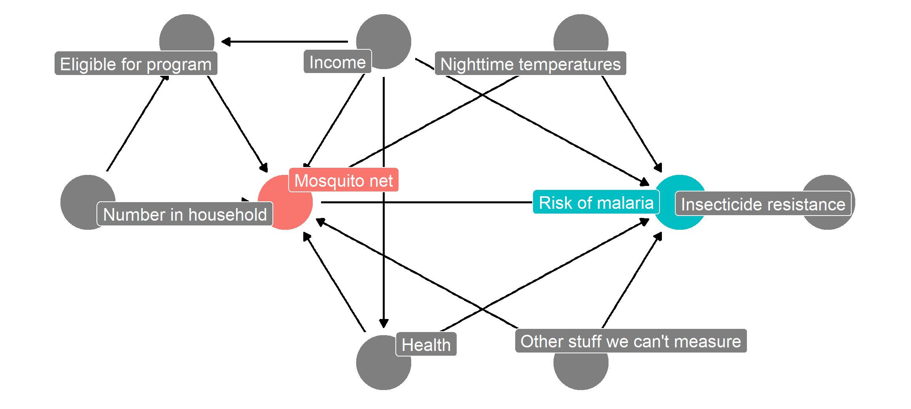
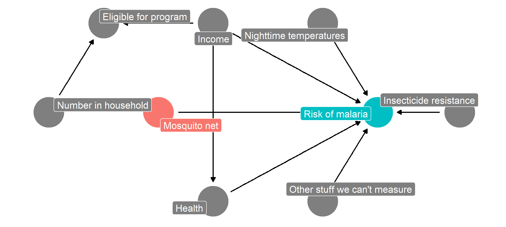
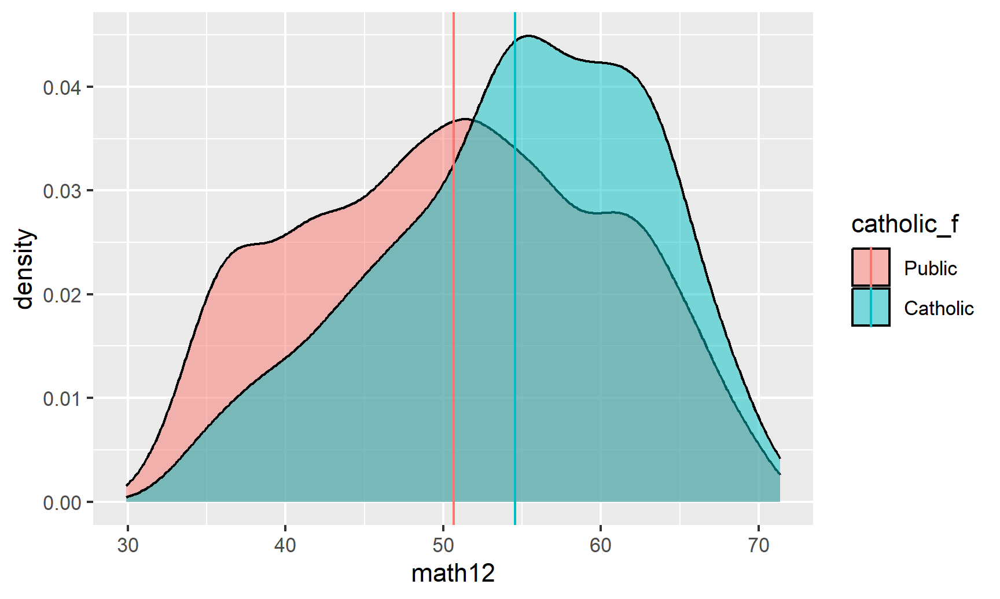
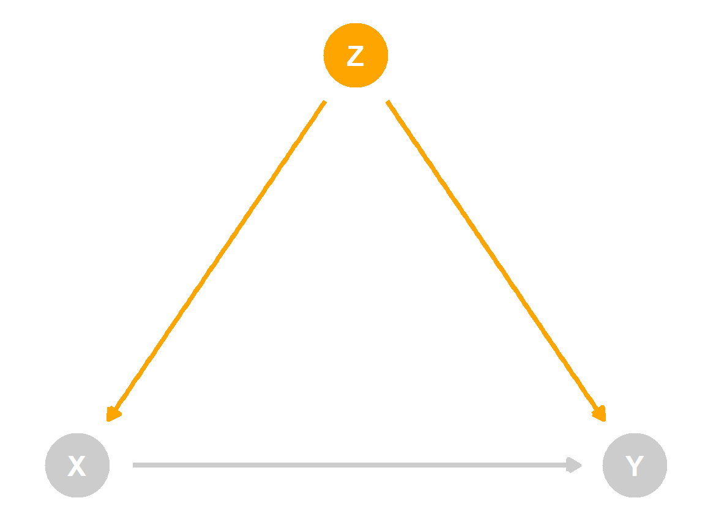
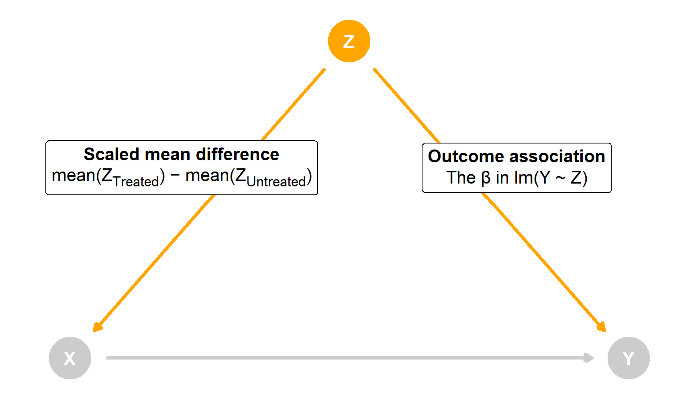
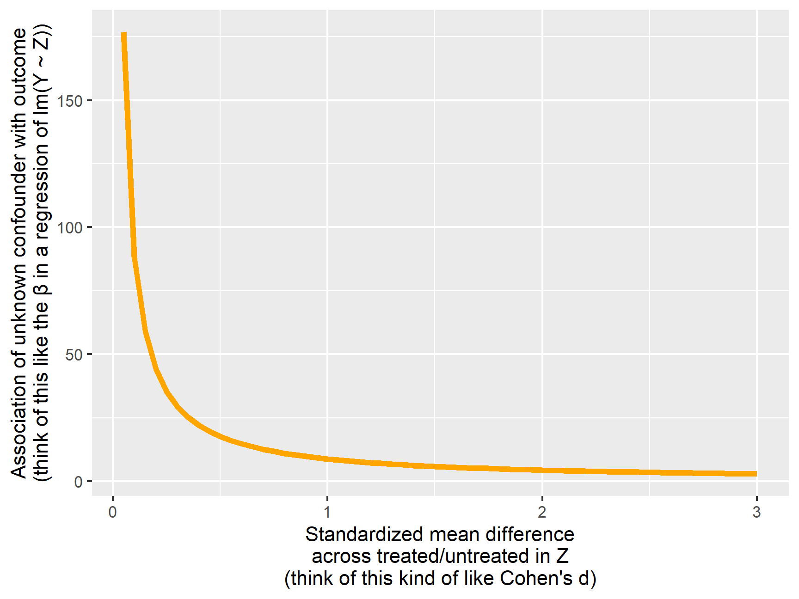
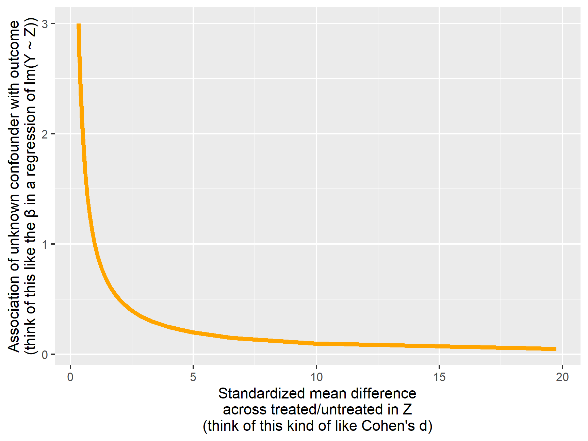
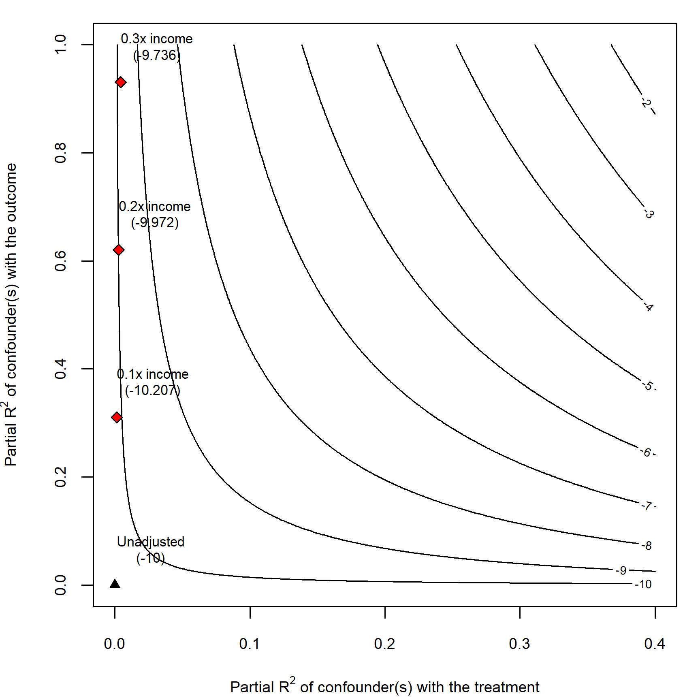
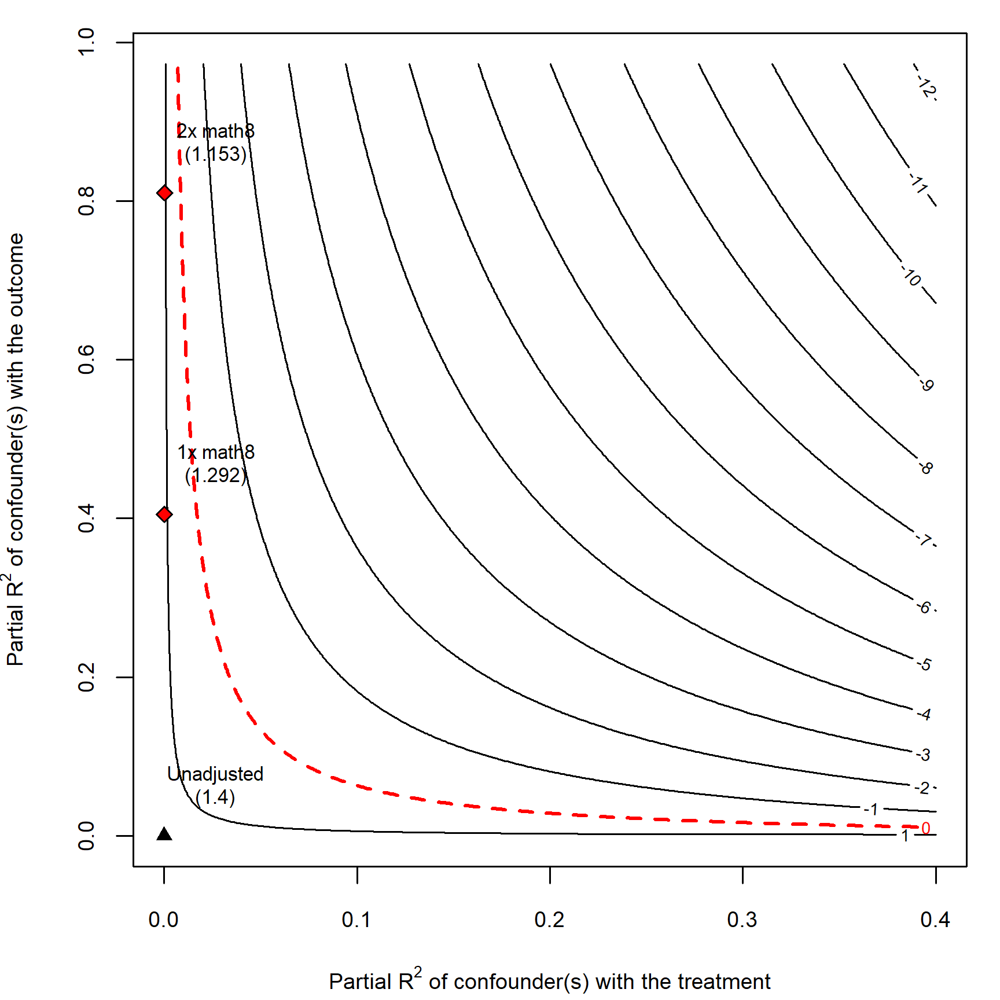
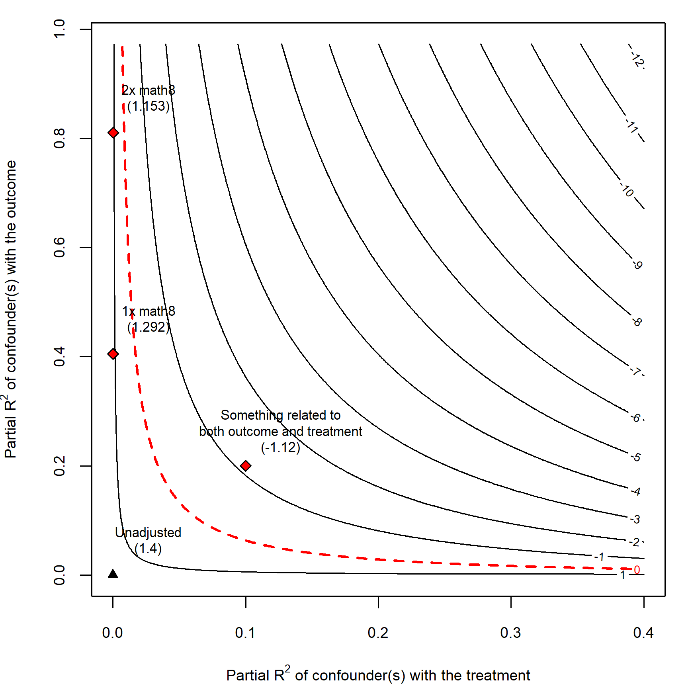

library(tidyverse) # ggplot(), %>%, mutate(), and friendslibrary(ggdag) # Make DAGslibrary(dagitty) # Do DAG logic with Rlibrary(haven) # Load data from Stata fileslibrary(broom) # Convert models to data frameslibrary(patchwork) # Combine ggplot plotsset.seed(1234) # Make all random draws reproducible
You can never close every backdoor without an experiment
Throughout the semester, we’ve used causal models to map out the data generating process that connects a treatment (like a program or a policy) to a social outcome. By drawing DAGs, we can ostensibly find causal effects in observational non-experimental data by using DAG logic to close backdoor paths and deal with confounding. You’ve even done this with matching and inverse probability weighting, and you’ll be doing it with quasi-experimental designs like diff-in-diff, regression discontinuity, and instrumental variables.
However, doing observational causal inference requires a fairly strong assumption: all nodes that need to be adjusted for are observable and measurable. Let’s go back to the mosquito net program example we used in the matching and inverse probability weighting example, and let’s add a new node here for unobserved confounding—something unknown causes people to both use nets and causes changes in individual malaria risk.
Code
mosquito_dag <-dagify( malaria_risk ~ net + income + health + temperature + resistance + unobserved, net ~ income + health + temperature + eligible + household + unobserved, eligible ~ income + household, health ~ income,exposure ="net",outcome ="malaria_risk",coords =list(x =c(malaria_risk =7, net =3, income =4, health =4, unobserved =6,temperature =6, resistance =8.5, eligible =2, household =1),y =c(malaria_risk =2, net =2, income =3, health =1, unobserved =1,temperature =3, resistance =2, eligible =3, household =2)),labels =c(malaria_risk ="Risk of malaria", net ="Mosquito net", income ="Income",health ="Health", temperature ="Nighttime temperatures",resistance ="Insecticide resistance",eligible ="Eligible for program", household ="Number in household",unobserved ="Other stuff we can't measure"))ggdag_status(mosquito_dag, use_labels ="label", text =FALSE) +guides(fill ="none", color ="none") +# Disable the legendtheme_dag()

If we could run an RCT for this net program, we’d get to delete all the arrows going into the mosquito net node, since we’d have total control over the assignment to treatment (and thus control over that aspect of the data generating process). Our DAG would look like this, and the arrow between the program and the outcome would be completely isolated and identified. We’d be able to easily and confidently measure the effect of mosquito net use on malaria risk with just a basic lm(malaria_risk ~ net):
Code
mosquito_dag_rct <-dagify( malaria_risk ~ net + income + health + temperature + resistance + unobserved,# net ~ income + health + temperature + eligible + household + unobserved, eligible ~ income + household, health ~ income,exposure ="net",outcome ="malaria_risk",coords =list(x =c(malaria_risk =7, net =3, income =4, health =4, unobserved =6,temperature =6, resistance =8.5, eligible =2, household =1),y =c(malaria_risk =2, net =2, income =3, health =1, unobserved =1,temperature =3, resistance =2, eligible =3, household =2)),labels =c(malaria_risk ="Risk of malaria", net ="Mosquito net", income ="Income",health ="Health", temperature ="Nighttime temperatures",resistance ="Insecticide resistance",eligible ="Eligible for program", household ="Number in household",unobserved ="Other stuff we can't measure"))ggdag_status(mosquito_dag_rct, use_labels ="label", text =FALSE) +guides(fill ="none", color ="none") +# Disable the legendtheme_dag()

Since we don’t have experimental data, though, we’re stuck with observational data. Never fear though! We can use do-calculus logic to see what we need to adjust for statistically to remove confounding:
Easy! To isolate the causal effect, we just have to adjust for health, income, nighttime temperatures and… <record scratch> unobserved and unmeasurable things. oh no. You can’t adjust for things that you can’t measure (or can’t even see).
With experiments, you get to eliminate all confounding by definition—that’s why experiments are great. With observational data, you’ll always have unobserved confounding lurking in the shadows.
Sensitivity analysis
One neat approach for dealing with unobserved confounding is to run your analysis assuming you’ve measured everything and closed all the required backdoors, and then see how sensitive your results are to hypothetical confounders. You can explore a bunch of different questions:
How much of an effect would a single hypothetical unmeasured confounder have to have on both treatment and outcome to make the estimated causal effect 0?
How much of an effect would a single hypothetical unmeasured confounder have to have on both treatment and outcome to make it so the confidence interval of the causal effect includes 0?
How many smaller hypothetical unmeasured confounders would there have to be make the estimated causal effect 0, or make it so the confidence interval includes 0?
How likely is it that there are unmeasured confounders in the world that are that strong?
Basically your goal with sensitivity analysis is to try to ruin your causal effect. You want to see how much unobserved confounding you can throw at your causal effect before it breaks, then explore if that much confounding is plausible. If throwing just a single little hypothetical confounder into your model is enough to eliminate the causal effect, you’re probably in bad shape. If it would take substantial confounding to break it, you’re probably safe.
Our goal in this example is to estimate causal effects for two different situations:
The effect of a hypothetical mosquito net program on malaria risk (which we already used in the DAG example and the matching/IPW example). This data is fake. There’s a built-in average treatment effect of −10: using a mosquito net causes the risk of malaria to decrease by 10 points, on average.
The effect of attending Catholic school on math scores. This data is real and was used by Altonji, Elder, and Taber (2005) (and by lots of other researchers since then). A widely used econometrics textbook called Methods Matter(Murnane and Willett 2011) uses this data as an example, too, and you can access the data from Stata. Since this isn’t fake data, we actually have no idea what the true average treatment effect is.
Let’s find—and then ruin—these effects!
Data background
Let’s quickly look at the data we’ll be using. You can get the data files here—put them in a folder named data in an RStudio Project folder.
Our main question here is whether using mosquito nets decreases an individual’s risk of contracting malaria. Fake researchers have collected data from 1,752 fake households in a fake country and have variables related to environmental factors, individual health, and household characteristics. The CSV file contains the following columns:
Malaria risk (malaria_risk): The likelihood that someone in the household will be infected with malaria. Measured on a scale of 0–100, with higher values indicating higher risk.
Mosquito net (net and net_num): A binary variable indicating if the household used mosquito nets.
Eligible for program (eligible): A binary variable indicating if the household is eligible for the free net program.
Income (income): The household’s monthly income, in US dollars.
Nighttime temperatures (temperature): The average temperature at night, in Celsius.
Health (health): Self-reported healthiness in the household. Measured on a scale of 0–100, with higher values indicating better health.
Number in household (household): Number of people living in the household.
Insecticide resistance (resistance): Some strains of mosquitoes are more resistant to insecticide and thus pose a higher risk of infecting people with malaria. This is measured on a scale of 0–100, with higher values indicating higher resistance.
Real Catholic schools
Our main question here is whether attending a Catholic high school (instead of a public high school) causes people to have higher math scores in 12th grade. The data contains a sample of 5,671 students from the National Education Longitudinal Study of 1988 (NELS:88)—these students lived in households with annual income of less than $75,000 (1988 dollars) in the first year of the NELS:88 survey. A clean version of the dataset is available at UCLA’s IDRE statistical consulting website, but only as a Stata file. I loaded this data using Stata, then saved it from Stata and included it here on this website. (You can see another example of this data being used for propensity score matching here.)
The .dta file contains 25 columns, but these are the ones we’ll care about for this example:
Math score (math12): Standardized math score in 12th grade. Ranges between 30ish and 71ish.
Catholic school (catholic): A binary variable indicating if the student attended a catholic high school (1) or a public high school (0).
Family income (faminc8, converted to inc8): Total family income in 8th grade. This is a categorical variable, but the authors of this study convert levels to actual numbers that fall in the income range. These numbers are in thousands of dollars (so 2 means $2,000):
None: 0
< \$1,000: 0.5
\$1,000-\$2,999: 2
\$3,000-\$4,999: 4
\$5,000-\$7,499: 6.25
\$7,500-\$9,999: 8.75
\$10,000-\$14,999: 12.5
\$15,000-\$19,999: 17.5
\$20,000-\$24,999: 22.5
\$25,000-\$34,999: 30
\$35,000-\$49,999: 42.5
\$50,000-\$74,999: 62.5
8th grade math score (math8): Standardized math score in 8th grade.
Father’s support (fhowfar): How far in school the student’s father wants the student to go. Categorical variable with these levels:
1: Not finish high school
2: High school graduation
3: Junior college graduation
4: Less than four years of college
5: College graduation
6: Post-secondary education
Mother’s support (mhowfar): How far in school the student’s mother wants the student to go. Categorical variable with the same levels as fhowfar.
Fighting behavior (fight8): A categorical variable indicating if the student got into a fight with another student in 8th grade:
1: Never
2: Once or twice
3: More than twice
Homework non-completion (nohw8): A binary variable indicating if the student rarely completed homework in 8th grade.
Disruptiveness (disrupt8): A binary variable indicating if the student was frequently disruptive in 8th grade.
Drop-out risk factors (riskdrop8): A count of the number of risk factors for dropping out of school. Ranges between 0 and 5.
Let’s load the data and get started! Again, if you haven’t yet, download the two datasets here:
nets <-read_csv("data/mosquito_nets.csv")school_data <-read_stata("data/catholic.dta") %>%# This data comes with Stata column labels and formatting details that can# sometimes conflict with R functions, so `zap_labels()` and `zap_formats()`# here get rid of themzap_labels() %>%zap_formats() %>%# Make a categorical version of the catholic columnmutate(catholic_f =factor(catholic, labels =c("Public", "Catholic"))) %>%# The faminc8 column shows the family's income in 8th grade, but using a# 12-level categorical system. The authors of the original study converted# this system to an actual value based on the middle of the range. So since# level 3 represents $1000-$2999, they use 2, etc.mutate(inc8 =recode(faminc8,"1"=0,"2"= .5,"3"=2,"4"=4,"5"=6.25,"6"=8.75,"7"=12.5,"8"=17.5,"9"=22.5,"10"=30,"11"=42.5,"12"=62.5 ))
Important background concepts
Before we look at how to tip and ruin our causal effects, we have to look at two important background concepts: (1) standardization and z-scores and (2) partial \(R^2\).
Standardization and z-scores
Most of the time, we think about the distributions of variables with their original values. For instance, here’s what the range of 12th grade math scores looks like across our treatment (Catholic) and control (public) groups:
Code
ggplot(school_data, aes(x = math12, fill = catholic_f)) +geom_density(alpha =0.5)
The scores range between 30ish and 70ish, and it seems like the distribution in Catholic schools is higher than public schools—the average for Catholic school students appears to cluster around 60.
We can calculate the actual average scores and overlay them as vertical lines:
Code
math_averages <- school_data %>%group_by(catholic_f) %>%summarize(avg =mean(math12))math_averages## # A tibble: 2 × 2## catholic_f avg## <fct> <dbl>## 1 Public 50.6## 2 Catholic 54.5ggplot(school_data, aes(x = math12, fill = catholic_f)) +geom_density(alpha =0.5) +geom_vline(data = math_averages, aes(xintercept = avg, color = catholic_f))

Based on our math_averages table, there’s a 4ish point difference in averages. We can use a little regression model to find the actual difference:
The Catholic school “effect” is 3.89. This is most definitely not a causal effect at all—we haven’t taken care of any of the confounders!—but we’ll work with this for now just for illustration.
An alternative way to think about these math scores is to standardize them, or scale them down so that the average score is 0 and all other observations are scaled based on how far away they are from the average. In past stats classes you probably learned about z-scores—those are standardized values. To calculate a z-score, you use this formula:
Fortunately R makes this really easy—the built-in scale() function will center and rescale columns for you. Let’s make a scaled version (i.e. z-scores) of math scores and name it math12_z.
Code
school_data_scaled <- school_data %>%mutate(math12_z =scale(math12))school_data_scaled %>%select(math12, math12_z) %>%head()## # A tibble: 6 × 2## math12 math12_z[,1]## <dbl> <dbl>## 1 49.8 -0.135 ## 2 59.8 0.925 ## 3 50.4 -0.0706## 4 45.0 -0.634 ## 5 54.3 0.338 ## 6 55.4 0.454# See the overall average and standard deviationschool_data_scaled %>%summarize(avg =mean(math12),sd =sd(math12))## # A tibble: 1 × 2## avg sd## <dbl> <dbl>## 1 51.1 9.50
These z-scores measure how far away each student’s score is from the average, or 51.1. Person 1 here is a little bit below the average, Person 2 is fairly higher than the average, Person 3 is almost exactly at the average, and so on.
The units of these z-scores are technically the number of standard deviations away from the average each person is. The standard deviation of the math scores is 9.5. That means that someone with a z-score of 1 would have a math score of 9.5 higher than the average. If you look at Person 2, they’re pretty close to 1, and their score of 59.8 is 8.7 points higher than the average of 51.1, which is close to 9.5. If you look at person number 3, their z-score is -0.07, which means that they’re just a little bit below the average. More precisely, they’re -0.07 * 9.1 (-0.64) points below the average.
If you want, you can even transform z-scores back to their original values—multiply the z-score by the standard deviation and add the mean. You can see how that works if we algebraically rearrange the z-score formula so that \(x\) (the original value) is on its own:
\[
\begin{aligned}
\frac{x - \mu}{\sigma} &= Z \\
x - \mu &= Z \times \sigma \\
x &= (Z \times \sigma) + \mu
\end{aligned}
\]
For example, Person 2’s z-score is 0.925. If we multiply that by the standard deviation (\(\sigma\)) and add the mean (\(\mu\)), we should get their original score of 59.8:
Code
# This isn't 100% accurate because of rounding(0.925*9.5) +51.1## [1] 60# Fortunately R stores the mean and standard deviation of scaled columns as# special invisible attribute that we can extract and use:math_sigma <-attr(school_data_scaled$math12_z, "scaled:scale")math_mu <-attr(school_data_scaled$math12_z, "scaled:center")# These are also just the mean and sd of the original math columnperson2_score <- school_data_scaled %>%slice(2) %>%pull(math12_z)(person2_score * math_sigma) + math_mu## [,1]## [1,] 60## attr(,"scaled:center")## [1] 51## attr(,"scaled:scale")## [1] 9.5
So how do these scaled z-scores compare with the actual scores? Let’s look at the distribution:
Code
math_averages_scaled <- school_data_scaled %>%group_by(catholic_f) %>%summarize(avg_z =mean(math12_z))math_averages_scaled## # A tibble: 2 × 2## catholic_f avg_z## <fct> <dbl>## 1 Public -0.0428## 2 Catholic 0.367ggplot(school_data_scaled, aes(x = math12_z, fill = catholic_f)) +geom_density(alpha =0.5) +geom_vline(data = math_averages_scaled, aes(xintercept = avg_z, color = catholic_f))
This is the same plot that we saw earlier! The only difference is the x-axis—it now ranges between -2ish and 2ish instead of 30 and 70, since all we really did was transform and scale down the original test scores. They’re centered around 0 and are measured in standard deviations now, but deep down inside they’re still just the original test scores. The group averages are also measured in standard deviations now too (and we can rescale them back up if we want, too):
The distributions are identical except for the x-axis, and the difference in means is the same too, just measured slightly differently. The average for net users is 16.3 risk points lower than non-net users, or 1.06 standard deviations lower.
Effect sizes
But why would we ever want to think about variables on a standard deviation scale (which is weird) rather than the original scale (which makes more sense)?!
One of the main reasons is that using standard deviations makes it so effect sizes are comparable across different kinds of variables. In this study, math scores were measured on a scale that ranges from 30–70, but what if another study uses math scores that range from 0–20? The Catholic school effect on that scale is probably not going to be almost 4—that would be a huge amount. To make things comparable across these two different kinds of math scores, we can scale them down so that we look at their averages and standard deviations. Presumably, assuming the Catholic effect really is 4 points (it’s not), or 0.367 standard deviations, it should also increase test scores by 0.367 standard deviations for students taking the 0–20 test (or on any kind of math test).
You can think of this value as the standardized mean difference between the two groups. It’s standardized so it can theoretically apply to other kinds of scales. Thinking about effect sizes on a standard deviation scale gives us a common vocabulary for talking and thinking about how interventions or programs can change outcomes.
There’s even a formal measure for talking and thinking about effect sizes called Cohen’s d (d = difference), which measures the sizes of effects based essentially on their z-scores. Officially, Cohen’s d is calculated like this:
There are general rules of thumb for interpreting these values:
Effect size
d
Very small
0.01
Small
0.20
Medium
0.50
Large
0.80
Very large
1.20
Huge
2.00
Based on this table, our (incorrect) Catholic school effect of 0.367 standard deviations is actually somewhere between a small and medium effect.
Warning
QUICK IMPORTANT CAVEAT: Technically for mathy reasons, Cohen’s d is not exactly comparable to just looking at the number of standard deviations between the averages, but it’s a good way of thinking about effect sizes. If you want to be official about it, one way to get Cohen’s d from regression output is to divide the coefficient (which is like \(\bar{x}_2 - \bar{x}_1\) in the formula) by the residual standard error of the model (which is like \(s\) in the formula). You can get these from tidy() and glance():
Our official effect size for Catholic schools is thus 0.41, which is still between a small and medium effect. For mosquito nets, the effect size is 1.2, which is very large. (Again, all these effects are technically wrong and full of confounding! We’ll fix that in a minute.)
Warning
ANOTHER QUICK IMPORTANT CAVEAT: Cohen’s d (and other standardized measures of effect size) are criticized for being too clear cut, too restrictive, and devoid of context. Cohen himself disavowed them! A 0.4 SD boost in math scores (or 4ish points) in Catholic schools might actually be groundbreaking and earth shattering for people interested in educational outcomes, despite the fact that it’s considered a “small” effect. Plus, seeing huge 2+ standard deviations in the real world is going to be rare for any program or intervention—it’s highly unlikely that a program will move the needle that much for an outcome. So don’t overinterpret these rules of thumb!
So, as an alternative to thinking about absolute effects (mosquito nets reduce the risk of malaria by X points; Catholic schools boost math scores by X points), we can think about relative effects (mosquito nets reduce the risk of malaria by X standard deviations below the average; Catholic schools boost math scores by X standard deviations above the average). We can think about this as the standardized mean difference between the treated and untreated groups (nets vs. no nets; Catholic vs. public high schools).
I promise this is all important and relevant for sensitivity analysis!
Partial \(R^2\)
One last bit of background before we get to the actual sensitivity analysis. Remember from these slides in Session 2 that we can imagine \(R^2\) like a Venn diagram—that each variable we add to a model explains some proportion of the variation in the outcome.
For instance, our naive Catholic schools model explains just 1.6% of the variation in math scores, and our mosquito net model explains 26.5% of the variation in malaria risk.
Adding more variables to these models will increase the amount of variation explained by the model. For instance, let’s control for some stuff in the malaria risk model:
By controlling for income and health, we now explain 81.5% of the variation in malaria risk. That’s a pretty big jump in \(R^2\). Where’d it come from? Which of those new variables explained that additional variation?
One way to figure this out is to calculate something called the partial\(R^2\). To do this, we essentially fit a bunch of variations of the model and leave out individual variables one at a time and note the \(R^2\) each time. That’s tedious to do manually, but the rsq.partial() function from the rsq library can do it for us:
Note how there’s one partial \(R^2\) for each variable here. Also note that these don’t add up to the original \(R^2\) of 0.815. They shouldn’t (and won’t) add up to the actual full\(R^2\). What these show is roughly what the \(R^2\) would be for each variable after accounting for the combined \(R^2\) of all the other variables.
So in this case, net use by itself (after accounting for income and health) would explain 40% of the variation in malaria risk, while income would explain a lot more (64.3%; it’s a super powerful predictor here). Health doesn’t do much.
This isn’t a 100% correct interpretation of partial \(R^2\) values and there are some missing nuances, but that’s okay—all that matters for the sensitivity analysis we’ll do is that you think about how adjusting for additional confounders might influence the amount of variation explained in the outcome.
Estimation of causal effects
PHEW that was a lot of background information, but it’s useful and important, so. Let’s finally adjust for confounders and estimate causal effects in both the mosquito net and Catholic schools examples. We’ll use inverse probability weighting just because—we could also use matching or other techniques, but IPW is fun. Consult the IPW guide for complete details about everything happening here.
Fake mosquito net program
Based on the DAG above, we need to adjust for income, nighttime temperatures, and health. We’ll first create a treatment model that predicts net usage using those confounders, then we’ll generate inverse probability of treatment weights, and then we’ll use those weights in an outcome model that estimates the effect of net usage on malaria risk.
After closing all known backdoors between treatment and outcome, the average treatment effect of using a mosquito net is a 10.1-point reduction in malaria risk.
We can convert this to a standardized mean difference (or Cohen’s d effect size) by dividing the coefficient by the residual standard error (or sigma in the results of glance()):
Code
-10.1/19.5## [1] -0.52
Looking back at the widely-used-but-overly-conservative table of effect sizes, that’s only a medium effect size. But given how effective it is and how cheap nets are, it’s actually probably a really good finding.
We can visualize this effect using density plots since geom_density() actually lets you specify weights. We can also calculate the net vs. no net averages while incorporating these weights using the weighted.mean() function.
Cool cool. We can see the difference in means after accounting for confounders with inverse probability weighting, resulting in a standardized mean difference of -0.66 (-0.391 - 0.265), or an effect size / Cohen’s d of 0.52.
Real Catholic schools
We haven’t drawn a formal DAG for the effect of Catholic schools on math scores, and we won’t here. Instead we’ll just copy what the original authors used as confounders and assume that it’s right. It’s probably not, but that’s okay for this example here:
Income (squared)
Income × 8th grade math
Father’s support
Mother’s support
Fighting behavior
Homework non-completion
Disruptiveness
Drop-out risk factors
Once again, we’ll first create a treatment model that predicts Catholic school attendance using those confounders, then we’ll generate inverse probability of treatment weights, and then we’ll use those weights in an outcome model that estimates the effect of Catholic schools on 12th grade math scores.
After closing all known backdoors between treatment and outcome (we hope!), the average treatment effect of attending a Catholic school is a 1.47-point increase in 12th grade math scores.
We can convert this to a standardized mean difference (or Cohen’s d effect size) by dividing the coefficient by the residual standard error (or sigma in the results of glance()):
Code
1.47/13.1## [1] 0.11
Based on this, Cohen’s d is 0.11, which is a very small effect!
We can visualize this effect using density plots since geom_density() actually lets you specify weights. We can also calculate the Catholic vs. public averages while incorporating these weights using the weighted.mean() function.
We can see the difference in means after accounting for confounders with inverse probability weighting, resulting in a standardized mean difference of 0.15 (0.139 - -0.0153), or an effect size / Cohen’s d of 0.11.
Sensitivity analysis with tipr
We have average treatment effects, but we’re not certain that we’ve actually dealt with all the confounding. There could be an unmeasured node—or lots of unmeasured nodes!—that would actually explain away the causal effect we’ve found.
For the sake of simplicity, let’s imagine there’s one unobserved confounder (Z). Because it’s a confounder, it has a causal effect on both treatment (X) and outcome (Y):

When Z moves up or down, X and Y both move too. You can even imagine this relationship like regression. If you ran a model like this…
lm(Y ~ Z)
…the coefficient for Z would show how much Y would change. You could say “A 1-unit change in Z is associated with a β-unit change in Y”.
Moving Z would also influence X, but we want to think about this movement a little differently since X is our treatment/program with exposed and unexposed observations. Instead of thinking about regression coefficients, think of this as the difference between the unmeasured confounder in the treated population and the untreated population. There could be a substantial 1 standard deviation difference in Z across the groups, or maybe a small 0.1 standard deviation difference.
As a formula, we can think of this scaled mean difference like this:
The coefficient for Z here would show the scaled mean difference across the two groups in X (this also works with continuous X values!). You can say “There’s a scaled mean difference of µ across treated and untreated groups in Z”
Both of these arrows are related. If Z leads to some change in Y, it’ll also lead to some change in the scaled mean difference across treated and untreated in Z.

If we consider both of these arrows (Z → Y and Z → X) we can actually determine how much an unmeasured Z would have to either influence Y or influence X in order to erase, explain away, or “tip” the causal effect.
To make this easy, we can use the super useful tipr package by Lucy D’Agostino McGowan, which implements an approach to sensitivity analysis first presented by Lin, Psaty, and Kronmal (1998). With tipr, we can do one of these things:
Specify a hypothetical outcome association (the β in lm(Y ~ Z)) to see how big the scaled mean difference would have to be to tip our results
Specify a hypothetical scaled mean difference to see how big the outcome association would have to be to tip our results
Specify both a hypothetical scaled mean difference and an outcome association to see how many similar confounders would have to exist to tip our results
Our goal with tipr is to find what kind of unmeasured Z would change the causal effect enough so that its confidence interval includes 0 (and is thus no longer statistically significant)
There are a lot of other ways to use tipr, with different combinations of binary and continuous treatments and outcomes, but the most general way I’ve found (given that we work with regression so much in this class) is to use the tip() function. Check out the README for examples of all the other approaches.
Let’s try it out!
Fake mosquito net program
To calculate different tipping points, we need to specify the confidence intervals of our causal effect. The easiest way to do that is to use tidy(..., conf.int = TRUE) and then filter those results so that we’re just looking at our causal effect (the upper bound of the confidence interval for netTRUE in this case). We can then feed those results to tip_coef(), which handles the sensitivity analysis for us.
For instance, let’s pretend that there’s an unmeasured confounder that has an standardized effect on the outcome of 5. For every one unit increase in this Z, malaria risk would increase by 5 points. If that was the case, how much of a difference in net usage would there be across this Z?
Code
library(tipr)tidy(model_net_ate, conf.int =TRUE) %>%filter(term =="netTRUE") %>%pull(conf.high) %>%tip_coef(confounder_outcome_effect =5)## The observed effect (-8.84) WOULD be tipped by 1 unmeasured confounder## with the following specifications:## * estimated difference in scaled means between the unmeasured confounder## in the exposed population and unexposed population: -1.77## * estimated relationship between the unmeasured confounder and the outcome: 5## # A tibble: 1 × 4## effect_observed exposure_confounder_effect confounder_outcome_effect n_unmeasured_confounders## <dbl> <dbl> <dbl> <dbl>## 1 -8.84 -1.77 5 1
The output of tipr gives us a bunch of useful information. Our confidence interval ranges from -11.5ish to -9ish. Our causal effect would get tipped (i.e. include 0) if the β in lm(Y ~ Z) was 5 and the standardized mean difference (smd) in Z across treated and untreated groups was 1.77. That’s potentially a pretty big difference!
To illustrate this, let’s pretend that Z is something like years of education, with a mean of 15 and a standard deviation of 1.5. We’d need to see a standardized mean difference of 1.77 in Z across net users and net non-users. We can transform that 1.77 standardized difference into years of education by multiplying 1.77 * 1.5, or 2.66. That means we’d need to see a difference of almost 3 years in years of education between net users and net non-users. It might look something like this:
We’d also need to assume that that disparity in net usage would need to be caused directly by years of education—that education causes a huge uptick in net use.
tipr tells you nothing about the plausibility of these results! It just says that if something had a β = 5 association with malaria risk, there’d have to be a 1.77 standardized mean difference in Z to break the causal effect. You decide how likely that is.
If you don’t want to think about standardized mean differences, you can think about hypothetical βs instead. Let’s say you pretend that there’s a 0.5 SMD difference across treated and untreated values in your unknown confounder. How big would the β need to be in a regression of lm(malaria_risk ~ Z)?
Code
tidy(model_net_ate, conf.int =TRUE) %>%filter(term =="netTRUE") %>%pull(conf.high) %>%tip_coef(exposure_confounder_effect =0.5)## The observed effect (-8.84) WOULD be tipped by 1 unmeasured confounder## with the following specifications:## * estimated difference in scaled means between the unmeasured confounder## in the exposed population and unexposed population: 0.5## * estimated relationship between the unmeasured confounder and the outcome: -17.68## # A tibble: 1 × 4## effect_observed exposure_confounder_effect confounder_outcome_effect n_unmeasured_confounders## <dbl> <dbl> <dbl> <dbl>## 1 -8.84 0.5 -17.7 1
17.7! A 1-unit change in this confounder would need to lead to a 17.7-point change in risk. That seems big. Maybe even implausible.
How big are the other βs in our model? We can’t really tell since our outcome model only has lm(malaria_risk ~ net), but we can run a temporary model with all our confounders as controls to get a sense of how big they are:
Code
lm(malaria_risk ~ net + income + temperature + health,data = net_iptw) %>%tidy()## # A tibble: 5 × 5## term estimate std.error statistic p.value## <chr> <dbl> <dbl> <dbl> <dbl>## 1 (Intercept) 76.2 0.927 82.2 0 ## 2 netTRUE -10.4 0.265 -39.4 1.20e-243## 3 income -0.0751 0.00104 -72.6 0 ## 4 temperature 1.01 0.0310 32.5 1.36e-181## 5 health 0.148 0.0107 13.9 8.87e- 42
None of those are really close at all. The net effect is huge at 10.4, but the others are all tiny—temperature comes the closest with 1.01, but that’s pretty far from 17.7. If you can think of some sort of confounder (or lots of confounders) that could be associated with the outcome at 17.7, tipping is plausible. Here, it’s not. (Again, this all assumes a 0.5 SD difference between treated and untreated people in this unknown confounder Z.)
These two numbers—the standardized mean difference and the outcome association—are directly related. Look at this graph, for instance:
Code
plot_stuff <-tidy(model_net_ate, conf.int =TRUE) %>%filter(term =="netTRUE") %>%pull(conf.high) %>%tip_coef(exposure_confounder_effect =seq(0.05, 3, by =0.05), verbose =FALSE)ggplot(plot_stuff, aes(x = exposure_confounder_effect, y =abs(confounder_outcome_effect))) +geom_line(linewidth =1.5, color ="orange") +labs(x ="Standardized mean difference\nacross treated/untreated in Z\n(think of this kind of like Cohen's d)",y ="Association of unknown confounder with outcome\n(think of this like the β in a regression of lm(Y ~ Z))")

As the standardized mean difference (i.e. the difference between net users and net non-users across education) gets bigger, the required size of the outcome association β shrinks. That’s because a huge SMD is sufficient to tip the results. Conversely, a huge outcome association β makes it so you don’t need a large SMD to tip the results. Small numbers of each won’t tip the results.
So far this all assumes that we have a single unmeasured confounder. That’s not super plausible. If we specify both a hypothetical SMD and a hypothetical outcome association, we can calculate how many similarly-sized confounders would need to exist to tip the results. For instance, let’s say we’re worried that there are a bunch of confounders with a small level of association with the outcome, like -0.3 (that’s like twice the size of the health coefficient from the model above), and we assume that each of these confounders has a treated vs. untreated SMD of 0.5. How many of these confounders would need to exist in order to break our results?
Code
tidy(model_net_ate, conf.int =TRUE) %>%filter(term =="netTRUE") %>%pull(conf.high) %>%tip_coef(exposure_confounder_effect =0.5, confounder_outcome_effect =-0.3)## The observed effect (-8.84) WOULD be tipped by 59 unmeasured confounders## with the following specifications:## * estimated difference in scaled means between the unmeasured confounder## in the exposed population and unexposed population: 0.5## * estimated relationship between the unmeasured confounder and the outcome: -0.3## # A tibble: 1 × 4## effect_observed exposure_confounder_effect confounder_outcome_effect n_unmeasured_confounders## <dbl> <dbl> <dbl> <dbl>## 1 -8.84 0.5 -0.3 58.9
Phew. We’d need basically 59 (58.9) separate confounders with similar characteristics in order to tip our results and make the ATE not significant. That seems like a lot.
Based on this sensitivity analysis, then, I feel fairly confident that unmeasured confounders aren’t going to mess up our results. The ATE from the IPW model is -10.1, and unmeasured confounders might shrink that down a little, but getting that down near zero will require a lot of unmeasured confounding. (This isn’t surprising since it’s overly perfect fake data.)
Real Catholic schools
Let’s try using tipr with our Catholic schools ATE. To get a sense of how big our existing confounders are currently, we’ll run a temporary model instead of using the 2-step IPW model
Those are all fairly small βs. The largest ones apart from the intercept and our treatment variable are nohw8 at -1.25 and math8 at 0.815. What if we had an unmeasured confounder that was twice the size of math8 at 1.6 (i.e. a 1-unit change in this mystery variable leads to a 1.6-point change in test scores)?
Code
tidy(model_school_ate, conf.int =TRUE) %>%filter(term =="catholic") %>%pull(conf.low) %>%tip_coef(exposure_confounder_effect =1.6)## The observed effect (0.99) WOULD be tipped by 1 unmeasured confounder## with the following specifications:## * estimated difference in scaled means between the unmeasured confounder## in the exposed population and unexposed population: 1.6## * estimated relationship between the unmeasured confounder and the outcome: 0.62## # A tibble: 1 × 4## effect_observed exposure_confounder_effect confounder_outcome_effect n_unmeasured_confounders## <dbl> <dbl> <dbl> <dbl>## 1 0.988 1.6 0.617 1
If that were the case, we’d need to see an SMD of 0.617 in the unknown variable across treated and untreated units. That seems potentially plausible. Again, think back to the hypothetical years of education example from the net sensitivity analysis. Let’s pretend that years of mother’s education is normally distributed with a mean of 15 and a standard deviation of 1.5. We can transform that 0.617 standardized difference into years of education by multiplying 0.617 * 1.5, or 0.93. That means we’d need to see a difference of almost 1 year of mother’s education between Catholic and public school students. That seems eminently plausible.
What if we think that 1.6 might be too high for a coefficient and we bump it down to 0.8, like 8th grade math scores?
Code
tidy(model_school_ate, conf.int =TRUE) %>%filter(term =="catholic") %>%pull(conf.low) %>%tip_coef(exposure_confounder_effect =0.8)## The observed effect (0.99) WOULD be tipped by 1 unmeasured confounder## with the following specifications:## * estimated difference in scaled means between the unmeasured confounder## in the exposed population and unexposed population: 0.8## * estimated relationship between the unmeasured confounder and the outcome: 1.23## # A tibble: 1 × 4## effect_observed exposure_confounder_effect confounder_outcome_effect n_unmeasured_confounders## <dbl> <dbl> <dbl> <dbl>## 1 0.988 0.8 1.23 1
The SMD would need to be higher, but not super high. Assuming a unknown variable like our imaginary years of mother’s education, that would look like a difference of 1.23 * 1.5, or 1.84 years. Again, that might be plausible. Especially since so far we’re only thinking about a single unmeasured confounder.
We can also solve for different values of the outcome association β. For instance, if we assume an SMD of 0.5 (half a standard deviation), how big would the β need to be in a regression of lm(math12 ~ Z)?
Code
tidy(model_school_ate, conf.int =TRUE) %>%filter(term =="catholic") %>%pull(conf.low) %>%tip_coef(confounder_outcome_effect =0.5)## The observed effect (0.99) WOULD be tipped by 1 unmeasured confounder## with the following specifications:## * estimated difference in scaled means between the unmeasured confounder## in the exposed population and unexposed population: 1.98## * estimated relationship between the unmeasured confounder and the outcome: 0.5## # A tibble: 1 × 4## effect_observed exposure_confounder_effect confounder_outcome_effect n_unmeasured_confounders## <dbl> <dbl> <dbl> <dbl>## 1 0.988 1.98 0.5 1
Yikes. We’d only need a β of 1.98. Again, that’s larger than any of our existing βs for now (homework non-completion comes closest at 1.25), but it seems fairly reasonable. Again, we’re only thinking about a single hypothetical unmeasured confounder here—adding more will decrease that hypothetical β even more.
Here are all the combinations of SMD and outcome association that would tip our ATE:
Code
plot_stuff <-tidy(model_school_ate, conf.int =TRUE) %>%filter(term =="catholic") %>%pull(conf.low) %>%tip_coef(confounder_outcome_effect =seq(0.05, 3, by =0.05), verbose =FALSE)ggplot(plot_stuff, aes(x = exposure_confounder_effect, y =abs(confounder_outcome_effect))) +geom_line(linewidth =1.5, color ="orange") +labs(x ="Standardized mean difference\nacross treated/untreated in Z\n(think of this kind of like Cohen's d)",y ="Association of unknown confounder with outcome\n(think of this like the β in a regression of lm(Y ~ Z))")

At the extreme, if there’s absolutely no difference between treated and untreated within our unmeasured Z, we’d need a β of 20ish to tip the results. That drops pretty rapidly too—a smaller SMD of 0.3 would need a β of ≈3 to tip.
Again, this is all just with one unmeasured confounder. What if there are a bunch of confounders, all with an SMD of 0.3 and little βs like 0.4?
Code
tidy(model_school_ate, conf.int =TRUE) %>%filter(term =="catholic") %>%pull(conf.low) %>%tip_coef(exposure_confounder_effect =0.3, confounder_outcome_effect =0.4)## The observed effect (0.99) WOULD be tipped by 8 unmeasured confounders## with the following specifications:## * estimated difference in scaled means between the unmeasured confounder## in the exposed population and unexposed population: 0.3## * estimated relationship between the unmeasured confounder and the outcome: 0.4## # A tibble: 1 × 4## effect_observed exposure_confounder_effect confounder_outcome_effect n_unmeasured_confounders## <dbl> <dbl> <dbl> <dbl>## 1 0.988 0.3 0.4 8.23
We’d need just 8 of those kinds of confounders to tip the results and move the ATE into the world of nonsignificance.
Based on this sensitivity analysis, I don’t feel super confident that unmeasured confounders aren’t going to mess up the results. It doesn’t take too much to push that 1.4-point ATE near 0.
Sensitivity analysis with sensemakr
An alternative way to think about the power of an unmeasured confounder is to think about how much variation in the treatment and outcome might be explained by adding unknown variables, instead of thinking about standardized mean differences and outcome association βs. This involves thinking about \(R^2\) and partial \(R^2\) (that’s why we reviewed it way at the beginning of this example!).
A new method proposed by Carlos Cinelli and Chad Hazlett (Cinelli and Hazlett 2020)—and an accompanying R package named sensemakr—lets us do just that. We get a few specific numbers called robustness values that we can use to think about tipping thresholds. We can explore a few different questions with this kind of sensitivity analysis:
How strong would a confounder (or lots of confounders) have to be to change the effect so that it’s either 0, or so that its confidence interval includes 0 and is thus no longer statistically significant?
In a worst case scenario, how likely is it that unobserved confounders could all act together to eliminate the effect?
How plausible are these scenarios?
sensemakr’s main contribution to the world of sensitivity analysis is that it’s much more formalized in its approach and its results. The authors show that imagining different possible values that coefficients can take (kind of like what we did with tipr) can lead to erroneous results since that approach isn’t really systematic. With sensemakr, though, you get hard, specific bounds for the different values of \(R^2\) and how omitted confounders can bias your results.
The best overview of how sensemakr works is this short presentation by Carlos Cinelli from 2020. You should absolutely watch it (especially from 3:00–13:00). There’s also an example with code here, and their full paper is here (see the section called “Simple measures for routine reporting” in particular).
Let’s explore the robustness of our two causal effects with sensemakr!
Fake mosquito net program
First we’ll look at how robust our mosquito net ATE is. To start, we need to feed the sensemakr() function a few different arguments:
model: The model object that has the ATE in it. Importantly, this needs to have other coefficients in it to work. Our existing model_net_ate thus won’t work, since it only has one explanatory variable in it: lm(malaria_risk ~ net, weights = iptw). sensemakr doesn’t work with models like this, so we need to create a new model where we control for all our confounders instead of using matching or IPW. This will change the ATE a little, but that’s okay! The point of using sensemakr isn’t to estimate exact causal effects (we’ve already done that). Our goal with sensemakr is to, um, make sense of the results and learn what is needed to break them. We’ll get bounds and partial \(R^2\)s that will be roughly the same across different types of ATEs (based on regression, matching, or IPW), so don’t worry about the discrepancy too much.
Also, for whatever reason, sensemakr doesn’t work with non-numeric treatment variables. Previously we used net, which is a TRUE/FALSE binary variable. Here we need to use net_num, which is a 0/1 numeric variable.
treatment: The name of the treatment variable. Again, this has to be numeric, not a factor or TRUE/FALSE.
benchmark_covariates: The name of 1 or more existing confounders that we want to use as a baseline comparison. In the video above, this was gender. Typically you want to use a variable that has a substantial impact on the treatment and outcome already, since you can then say things like “an unmeasured confounder the same strength as gender (or twice as strong as gender, or whatever) would change the results by some amount”.
kd: Hypothetical strengths of the unknown confounder relative to the benchmark covariates. If you want to see what would happen if the unmeasured confounder were 1x, 2x, and 3x stronger than gender, for instance, you’d use kd = c(1, 2, 3) or kd = 1:3.
First, we’ll need to rerun our model in a single step instead of using a treatment model and an outcome model weighted by inverse probability weights. Again, this won’t give the exact ATE as before, but it’s okay for this this sensitivity analysis. We’ll also look at the partial \(R^2\)s to get a sense for how much variation each of these these different variables explain:
Our ATE is roughly the same (-10.4 now instead of -10.1), which is fine. The partial \(R^2\)s here are interesting. By itself, net use has a fairly high \(R^2\) with 0.47. Temperature is a little less powerful with 0.38, health has 0.10, while income has an astoundingly high partial \(R^2\) of 0.75! Again, this is because this is overly perfect fake data.
Now we can feed this model to sensemakr(). We’ll use income as our benchmark covariate since it’s so strong—it’s hard to imagine that there might be confounders as strong as income. We’ll also change the kd argument. Income happens to be so strong in this case, that thinking about an unknown confounder as strong as income breaks the function, and thinking about a confounder 2x or 3x as strong as income super breaks the function (I only discovered this because I tried kd = 1:3 and sensemakr() yelled at me, so I bumped the kd values down until it worked). Here, we’ll see what would happen if an unknown confounder was 10%, 20%, and 30% as strong as income.
Code
net_sensitivity <-sensemakr(model = model_net_controls,treatment ="net_num",benchmark_covariates ="income",kd =c(0.1, 0.2, 0.3))net_sensitivity## Sensitivity Analysis to Unobserved Confounding## ## Model Formula: malaria_risk ~ net_num + income + temperature + health## ## Null hypothesis: q = 1 and reduce = TRUE ## ## Unadjusted Estimates of ' net_num ':## Coef. estimate: -10 ## Standard Error: 0.26 ## t-value: -39 ## ## Sensitivity Statistics:## Partial R2 of treatment with outcome: 0.47 ## Robustness Value, q = 1 : 0.6 ## Robustness Value, q = 1 alpha = 0.05 : 0.58 ## ## For more information, check summary.
Printing out the results like this shows us a bunch of different estimates and robustness values, but I like the minimal reporting table that Carlos used in his video, so let’s look at that instead (ignore the slashes in front of each %; that’s a weird side effect of using this table in a knitted blogdown page)
Code
ovb_minimal_reporting(net_sensitivity, format ="pure_html")
Cool, let’s interpret this, following the pattern from the video. The last three columns of this table are the sensitivity statistics that we care about:
\(R^2_{Y \sim D \mid X}\) is the partial \(R^2\) of the treatment with the outcome. In an extreme scenario, even if unobserved confounders explained all the remaining variation in malaria risk, they would need to explain at least 47.1% of the unexplained (or residual) variation in net usage in order to bring the estimated effect down to 0. This is the bare minimum strength of confounders required to explain away the effect.
\(\text{RV}_{q = 1}\) is the robustness value. If unmeasured confounders could explain 59.8% of both the residual variation of malaria risk and of net use, it would be enough to bring the effect down to 0. Importantly, at least one of these hypothetical unmeasured confounders would have to have a partial \(R^2\) higher than 0.598.
\(\text{RV}_{q = 1, \alpha = 0.05}\) is a version of the robustness value that would make it so the 95% confidence interval of the effect includes 0 (the full RV makes it so the effect itself is 0). If unmeasured confounders could explain 58% of both the residual variation of malaria risk and of net use, it would be enough to make the confidence interval of the effect include 0. Importantly, at least one of these hypothetical unmeasured confounders would have to have a partial \(R^2\) higher than 0.58.
(Fun fact! You can get automatically generated interpretations of these values if you run summary(net_sensitivity). I won’t do that here, since it creates a ton of text, but you should!)
Are 47.1% and 59.8% big and plausible numbers for this situation? Who knows. This is where your knowledge about how malaria risk and mosquito nets comes into play. The hypothetical bounds we provided (i.e. 10% the strength of income) provide formal ways of looking at how plausible these robustness values are.
The little note at the bottom of the table shows us two different bounds. A confounder a tenth as strong as income can explain at most 31% of the residual variation of the outcome and 0.1% of the residual variation in the treatment. Mathematically, that’s all it could possibly explain.
Because both of these values are lower than the RV of 59.8%, we can safely conclude that the result is robust to a confounder a tenth as strong as income. Also, since the treatment bound of 0.1% is lower than the partial \(R^2\) value of 47.1%, we can conclude that the effect is robust to a worst case scenario with a confounder a tenth as strong as income.
Finally, we can make a neat plot to show how the effect would change and how likely it could be to tip.
Code
plot(net_sensitivity)

Each contour in the plot shows a value of the ATE. The black triangle shows the current ATE (rounded to -11 here), and the red diamonds show what the ATE would be if a confounder a tenth as strong as income, 20% the strength of income, and 30% the strength of income was included. Adding something like this wouldn’t really change the results much at all—all the diamonds are still below the -10 ATE, and none of them really push the results towards 0. In fact, an ATE = 0 curve doesn’t even appear on the plot—the lowest ATE we could possibly get if is -3, and that’s only if there’s a hypothetical confounder that explains almost 100% of the variation in outcome and 40% of the variation in treatment.
So how confident are we that unobserved confounding won’t mess up our results? Pretty pretty confident. We’d need some hugely correlated confounding variables to make any sort of dent in the ATE. Neat.
Real Catholic schools
How does sensemakr work with real data? Let’s throw our Catholic schools ATE at it and see.
First we’ll rerun the model with all the controls rather than weighting with IPW, and we’ll look at the partial \(R^2\)s to get a sense of how much variation in math scores each of these variables explains.
Whoa, these are some tiny partial \(R^2\)s. Catholic schools by themselves explain 0.697% of the variation in math scores, and most of the other covariates have similarly small values. The strongest variable here is math8, which explains 28.9% of the variation in 12th grade math scores on its own. Theoretically that makes sense—your math scores in 8th grade are probably strongly correlated with your math scores in 12th grade. We’ll use 8th grade math scores as our benchmark, since it’s hard to imagine a confounder stronger than that. We’ll look at hypothetical confounders that are the same strength and twice as strong as math8.
\(R^2_{Y \sim D \mid X}\) is the partial \(R^2\) of the treatment with the outcome. In an extreme scenario, even if unobserved confounders explained all the remaining variation in math scores, they would need to explain at least 0.7% of the unexplained (or residual) variation in Catholic school enrollment in order to bring the estimated effect down to 0. This is the bare minimum strength of confounders required to explain away the effect.
\(\text{RV}_{q = 1}\) is the robustness value. If unmeasured confounders could explain 8% of both the residual variation of math scores and of Catholic school enrollment, it would be enough to bring the effect down to 0. Importantly, at least one of these hypothetical unmeasured confounders would have to have a partial \(R^2\) higher than 0.8.
\(\text{RV}_{q = 1, \alpha = 0.05}\) is a version of the robustness value that would make it so the 95% confidence interval of the effect includes 0 (the full RV makes it so the effect itself is 0). If unmeasured confounders could explain 5.6% of both the residual variation of math scores and of Catholic school enrollment, it would be enough to make the confidence interval of the effect include 0. Importantly, at least one of these hypothetical unmeasured confounders would have to have a partial \(R^2\) higher than 0.056.
Are 0.7% and 8% plausible numbers for this situation? Again, who knows. (But probably! They seem really small!). This is where you get to use your knowledge about math scores and education policy and what kinds of things might explain this variation. The hypothetical bounds we provided (i.e. 1x and 2x the strength of 8th grade math scores) provide formal ways of looking at how plausible these robustness values are.
The note at the bottom of the table shows us two different bounds. A confounder that has the same strength as 8th grade math scores can explain at most 40.5% of the residual variation of the outcome and 0% of the residual variation in the treatment. Mathematically, that’s all it could possibly explain.
If both those bounds were lower than the RV of 8%, we could conclude that the results would be robust to a confounder as strong as math8. But they’re not! To tip our results, an unmeasured confounder would need to explain 8% of the variation in treatment and outcome. Something like 8th grade math scores could explain that much variation in the outcome (up to 40.5%!). Fortunately, 8th grade math scores aren’t really related to the treatment at all and can’t really explain any of that variation, so we’re fairly safe. But it’s possible to imagine something similar to 8th grade math scores that could explain just a little bit of the variation in both treatment and outcome, so we’re not actually that safe :)
The contour plot shows this as well:
Code
plot(school_sensitivity)

Here we have a dotted red contour, which we didn’t have in the mosquito net example since that ATE is pretty untippable. The red line here represents an ATE of 0—that’s where our treatment effect would disappear (and moving up and to the right would start turning the effect negative).
Including a confounder that’s as strong or twice as strong as 8th grade math scores would shrink the ATE to 1.292 and 1.153, and visually you can see that the red diamond is getting closer to the red dotted line. The red diamonds never cross the line though. That’s solely because in the data 8th grade math scores happen to have pretty much zero relation to the Catholic vs. public treatment. If a hypothetical confounder was related to both the treatment and outcome, things could tip. For instance, what if we had something that was weaker than math8 with a partial \(R^2\) with 12th grade math scores of 0.2, but also had a partial \(R^2\) with the treatment of 0.1?
Code
hypothetical_confounder <-adjusted_estimate(model_school_controls, treatment ="catholic", r2dz.x =0.1, r2yz.dx =0.2)plot(school_sensitivity)add_bound_to_contour(r2dz.x =0.1, r2yz.dx =0.2, bound_value = hypothetical_confounder,bound_label ="Something related to\nboth outcome and treatment")

That would completely reverse our finding and would result in a negative ATE of Catholic schools on math scores. Yikes.
How confidence are we in our findings? As long as unmeasured confounders only really influence the outcome, or only really influence the treatment, we’re fairly safe—even if something twice as strong as 8th grade math scores explains a ton of variation in the outcome, we’re okay as long as it also doesn’t simultaneously explain any of the variation in treatment. But if something moderately influences both treatment and outcome, we could be in trouble.
Which method should you use?
Either! If you like thinking about hypothetical βs and SMDs, use tipr. If you like thinking about \(R^2\), use sensemakr. Use both in the same analysis!
sensemakr has one important limitation: it only works with models that use \(R^2\). That means if you’re estimating outcome models with things like multilevel models or logistic regression, you can’t use sensemakr. tipr should work with any estimate that has a confidence interval, though, so you should be able to use it with pretty much any type of model.
Remember that sensemakr’s claim to fame is that it has clear and specific bounds. If you’re using tipr, you can be more systematic than throwing different βs and SMDs into the function. Choose a benchmark variable and see if your results tip if you include something as strong, twice as strong, and three times its size, either as a β on the outcome or as the between-group SMD.
References
Altonji, Joseph G., Todd E. Elder, and Christopher R. Taber. 2005. “Selection on Observed and Unobserved Variables: Assessing the Effectiveness of Catholic Schools.”Journal of Political Economy 113 (1): 151–84. https://doi.org/10.1086/426036.
Cinelli, Carlos, and Chad Hazlett. 2020. “Making Sense of Sensitivity: Extending Omitted Variable Bias.”Journal of the Royal Statistical Society: Series B (Statistical Methodology) 82 (1): 39–67. https://doi.org/10.1111/rssb.12348.
Lin, D. Y., B. M. Psaty, and R. A. Kronmal. 1998. “Assessing the Sensitivity of Regression Results to Unmeasured Confounders in Observational Studies.”Biometrics 54 (3): 948–63. https://doi.org/10.2307/2533848.
Murnane, Richard J., and John B. Willett. 2011. Methods Matter: Improving Causal Inference in Educational and Social Science Research. Oxford: Oxford University Press.
Source Code
---title: "Unobserved confounding and sensitivity analysis"---```{r setup, include=FALSE}knitr::opts_chunk$set(fig.width =6, fig.height =3.6, fig.align ="center",fig.retina =3, collapse =TRUE)set.seed(1234)options("digits"=2, "width"=150)``````{r load-libraries, message=FALSE, warning=FALSE}library(tidyverse) # ggplot(), %>%, mutate(), and friendslibrary(ggdag) # Make DAGslibrary(dagitty) # Do DAG logic with Rlibrary(haven) # Load data from Stata fileslibrary(broom) # Convert models to data frameslibrary(patchwork) # Combine ggplot plotsset.seed(1234) # Make all random draws reproducible```## You can never close every backdoor without an experimentThroughout the semester, we've used causal models to map out the data generating process that connects a treatment (like a program or a policy) to a social outcome. By drawing DAGs, we can ostensibly find causal effects in observational non-experimental data by using DAG logic to close backdoor paths and deal with confounding. You've even done this with [matching and inverse probability weighting](/example/matching-ipw.qmd), and you'll be doing it with quasi-experimental designs like [diff-in-diff](/example/diff-in-diff.qmd), [regression discontinuity](/example/rdd.qmd), and [instrumental variables](/example/iv.qmd).However, doing observational causal inference requires a fairly strong assumption: all nodes that need to be adjusted for are observable and measurable. Let's go back to the mosquito net program example we used in the [matching and inverse probability weighting](/example/matching-ipw.qmd) example, and let's add a new node here for unobserved confounding—something unknown causes people to both use nets and causes changes in individual malaria risk.```{r build-mosquito-dag-full, fig.width=8}mosquito_dag <-dagify( malaria_risk ~ net + income + health + temperature + resistance + unobserved, net ~ income + health + temperature + eligible + household + unobserved, eligible ~ income + household, health ~ income,exposure ="net",outcome ="malaria_risk",coords =list(x =c(malaria_risk =7, net =3, income =4, health =4, unobserved =6,temperature =6, resistance =8.5, eligible =2, household =1),y =c(malaria_risk =2, net =2, income =3, health =1, unobserved =1,temperature =3, resistance =2, eligible =3, household =2)),labels =c(malaria_risk ="Risk of malaria", net ="Mosquito net", income ="Income",health ="Health", temperature ="Nighttime temperatures",resistance ="Insecticide resistance",eligible ="Eligible for program", household ="Number in household",unobserved ="Other stuff we can't measure"))ggdag_status(mosquito_dag, use_labels ="label", text =FALSE) +guides(fill ="none", color ="none") +# Disable the legendtheme_dag()```If we could run an RCT for this net program, we'd get to delete all the arrows going into the mosquito net node, since we'd have total control over the assignment to treatment (and thus control over that aspect of the data generating process). Our DAG would look like this, and the arrow between the program and the outcome would be completely isolated and identified. We'd be able to easily and confidently measure the effect of mosquito net use on malaria risk with just a basic `lm(malaria_risk ~ net)`:```{r build-mosquito-dag-rct, fig.width=8}mosquito_dag_rct <-dagify( malaria_risk ~ net + income + health + temperature + resistance + unobserved,# net ~ income + health + temperature + eligible + household + unobserved, eligible ~ income + household, health ~ income,exposure ="net",outcome ="malaria_risk",coords =list(x =c(malaria_risk =7, net =3, income =4, health =4, unobserved =6,temperature =6, resistance =8.5, eligible =2, household =1),y =c(malaria_risk =2, net =2, income =3, health =1, unobserved =1,temperature =3, resistance =2, eligible =3, household =2)),labels =c(malaria_risk ="Risk of malaria", net ="Mosquito net", income ="Income",health ="Health", temperature ="Nighttime temperatures",resistance ="Insecticide resistance",eligible ="Eligible for program", household ="Number in household",unobserved ="Other stuff we can't measure"))ggdag_status(mosquito_dag_rct, use_labels ="label", text =FALSE) +guides(fill ="none", color ="none") +# Disable the legendtheme_dag()```Since we don't have experimental data, though, we're stuck with observational data. Never fear though! We can use *do*-calculus logic to see what we need to adjust for statistically to remove confounding:```{r mosquito-adjustment}adjustmentSets(mosquito_dag)```Easy! To isolate the causal effect, we just have to adjust for health, income, nighttime temperatures and… \<record scratch\> unobserved and unmeasurable things. oh no. You can't adjust for things that you can't measure (or can't even see).With experiments, you get to eliminate all confounding by definition—that's why experiments are great. With observational data, you'll always have unobserved confounding lurking in the shadows.## Sensitivity analysisOne neat approach for dealing with unobserved confounding is to run your analysis assuming you've measured everything and closed all the required backdoors, and then see how sensitive your results are to hypothetical confounders. You can explore a bunch of different questions:- How much of an effect would a single hypothetical unmeasured confounder have to have on both treatment and outcome to make the estimated causal effect 0?- How much of an effect would a single hypothetical unmeasured confounder have to have on both treatment and outcome to make it so the confidence interval of the causal effect includes 0?- How many smaller hypothetical unmeasured confounders would there have to be make the estimated causal effect 0, or make it so the confidence interval includes 0?- How likely is it that there are unmeasured confounders in the world that are that strong?Basically your goal with sensitivity analysis is to try to ruin your causal effect. You want to see how much unobserved confounding you can throw at your causal effect before it breaks, then explore if that much confounding is plausible. If throwing just a single little hypothetical confounder into your model is enough to eliminate the causal effect, you're probably in bad shape. If it would take substantial confounding to break it, you're probably safe.Our goal in this example is to estimate causal effects for two different situations:- **The effect of a hypothetical mosquito net program on malaria risk** (which we already used in the [DAG example](/example/dags.qmd) and the [matching/IPW example](/example/matching-ipw.qmd)). This data is **fake**. There's a built-in average treatment effect of −10: using a mosquito net causes the risk of malaria to decrease by 10 points, on average.- **The effect of attending Catholic school on math scores.** This data is **real** and was used by @AltonjiElderTaber:2005 (and by lots of other researchers since then). A widely used econometrics textbook called [*Methods Matter*](https://global.oup.com/academic/product/methods-matter-9780199753864)[@MurnaneWillett:2011] uses this data as an example, too, and [you can access the data from Stata](https://stats.idre.ucla.edu/stata/examples/methods-matter/chapter12/). Since this isn't fake data, we actually have no idea what the true average treatment effect is. Let's find—and then ruin—these effects!## Data backgroundLet's quickly look at the data we'll be using. You can get the data files here—put them in a folder named `data` in an RStudio Project folder.- [{{< fa table >}} `mosquito_nets.csv`](/files/data/generated_data/mosquito_nets.csv)- [{{< fa table >}} `catholic.dta`](/files/data/external_data.catholic.dta)### Fake mosquito net programOur main question here is whether using mosquito nets decreases an individual's risk of contracting malaria. Fake researchers have collected data from 1,752 fake households in a fake country and have variables related to environmental factors, individual health, and household characteristics. The CSV file contains the following columns:- Malaria risk (`malaria_risk`): The likelihood that someone in the household will be infected with malaria. Measured on a scale of 0–100, with higher values indicating higher risk.- Mosquito net (`net` and `net_num`): A binary variable indicating if the household used mosquito nets.- Eligible for program (`eligible`): A binary variable indicating if the household is eligible for the free net program.- Income (`income`): The household's monthly income, in US dollars.- Nighttime temperatures (`temperature`): The average temperature at night, in Celsius.- Health (`health`): Self-reported healthiness in the household. Measured on a scale of 0–100, with higher values indicating better health.- Number in household (`household`): Number of people living in the household.- Insecticide resistance (`resistance`): Some strains of mosquitoes are more resistant to insecticide and thus pose a higher risk of infecting people with malaria. This is measured on a scale of 0–100, with higher values indicating higher resistance.### Real Catholic schoolsOur main question here is whether attending a Catholic high school (instead of a public high school) causes people to have higher math scores in 12th grade. The data contains a sample of 5,671 students from the [National Education Longitudinal Study of 1988](https://nces.ed.gov/surveys/nels88/) (NELS:88)—these students lived in households with annual income of less than $75,000 (1988 dollars) in the first year of the NELS:88 survey. A clean version of the dataset is available at [UCLA's IDRE statistical consulting website](https://stats.idre.ucla.edu/stata/examples/methods-matter/chapter12/), but only as a Stata file. I loaded this data using Stata, then saved it from Stata and [included it here](/files/data/external_data/catholic.dta) on this website. (You can see another example of this data being [used for propensity score matching here](https://bookdown.org/aschmi11/causal_inf/propensity-score-matching.html).)The `.dta` file contains 25 columns, but these are the ones we'll care about for this example:- Math score (`math12`): Standardized math score in 12th grade. Ranges between 30ish and 71ish. - Catholic school (`catholic`): A binary variable indicating if the student attended a catholic high school (`1`) or a public high school (`0`).- Family income (`faminc8`, converted to `inc8`): Total family income in 8th grade. This is a categorical variable, but the authors of this study convert levels to actual numbers that fall in the income range. These numbers are in thousands of dollars (so 2 means \$2,000): - None: 0 - < \\$1,000: 0.5 - \\$1,000-\\$2,999: 2 - \\$3,000-\\$4,999: 4 - \\$5,000-\\$7,499: 6.25 - \\$7,500-\\$9,999: 8.75 - \\$10,000-\\$14,999: 12.5 - \\$15,000-\\$19,999: 17.5 - \\$20,000-\\$24,999: 22.5 - \\$25,000-\\$34,999: 30 - \\$35,000-\\$49,999: 42.5 - \\$50,000-\\$74,999: 62.5- 8th grade math score (`math8`): Standardized math score in 8th grade.- Father's support (`fhowfar`): How far in school the student's father wants the student to go. Categorical variable with these levels: - 1: Not finish high school - 2: High school graduation - 3: Junior college graduation - 4: Less than four years of college - 5: College graduation - 6: Post-secondary education- Mother's support (`mhowfar`): How far in school the student's mother wants the student to go. Categorical variable with the same levels as `fhowfar`.- Fighting behavior (`fight8`): A categorical variable indicating if the student got into a fight with another student in 8th grade: - 1: Never - 2: Once or twice - 3: More than twice- Homework non-completion (`nohw8`): A binary variable indicating if the student rarely completed homework in 8th grade.- Disruptiveness (`disrupt8`): A binary variable indicating if the student was frequently disruptive in 8th grade.- Drop-out risk factors (`riskdrop8`): A count of the number of risk factors for dropping out of school. Ranges between 0 and 5.---Let's load the data and get started! Again, if you haven't yet, download the two datasets here:- [{{< fa table >}} `mosquito_nets.csv`](/files/data/generated_data/mosquito_nets.csv)- [{{< fa table >}} `catholic.dta`](/files/data/external_data/catholic.dta)```{r load-data-fake, eval=FALSE}nets <-read_csv("data/mosquito_nets.csv")school_data <-read_stata("data/catholic.dta") %>%# This data comes with Stata column labels and formatting details that can# sometimes conflict with R functions, so `zap_labels()` and `zap_formats()`# here get rid of themzap_labels() %>%zap_formats() %>%# Make a categorical version of the catholic columnmutate(catholic_f =factor(catholic, labels =c("Public", "Catholic"))) %>%# The faminc8 column shows the family's income in 8th grade, but using a# 12-level categorical system. The authors of the original study converted# this system to an actual value based on the middle of the range. So since# level 3 represents $1000-$2999, they use 2, etc.mutate(inc8 =recode(faminc8,"1"=0,"2"= .5,"3"=2,"4"=4,"5"=6.25,"6"=8.75,"7"=12.5,"8"=17.5,"9"=22.5,"10"=30,"11"=42.5,"12"=62.5 ))``````{r load-data-real, include=FALSE}nets <-read_csv(here::here("files", "data", "generated_data", "mosquito_nets.csv"))school_data <-read_stata(here::here("files", "data", "external_data", "catholic.dta")) %>%zap_labels() %>%zap_formats() %>%mutate(catholic_f =factor(catholic, labels =c("Public", "Catholic"))) %>%mutate(inc8 =recode(faminc8,"1"=0,"2"= .5,"3"=2,"4"=4,"5"=6.25,"6"=8.75,"7"=12.5,"8"=17.5,"9"=22.5,"10"=30,"11"=42.5,"12"=62.5 ))```## Important background conceptsBefore we look at how to tip and ruin our causal effects, we have to look at two important background concepts: (1) standardization and z-scores and (2) partial $R^2$.### Standardization and z-scoresMost of the time, we think about the distributions of variables with their original values. For instance, here's what the range of 12th grade math scores looks like across our treatment (Catholic) and control (public) groups:```{r math-dist-regular}ggplot(school_data, aes(x = math12, fill = catholic_f)) +geom_density(alpha =0.5)```The scores range between 30ish and 70ish, and it seems like the distribution in Catholic schools is higher than public schools—the average for Catholic school students appears to cluster around 60.We can calculate the actual average scores and overlay them as vertical lines:```{r math-dist-regular-lines}math_averages <- school_data %>%group_by(catholic_f) %>%summarize(avg =mean(math12))math_averagesggplot(school_data, aes(x = math12, fill = catholic_f)) +geom_density(alpha =0.5) +geom_vline(data = math_averages, aes(xintercept = avg, color = catholic_f))```Based on our `math_averages` table, there's a 4ish point difference in averages. We can use a little regression model to find the actual difference:```{r math-diff-naive}model_math_naive <-lm(math12 ~ catholic_f, data = school_data)tidy(model_math_naive)```The Catholic school "effect" is 3.89. This is **most definitely not a causal effect at all**—we haven't taken care of any of the confounders!—but we'll work with this for now just for illustration.An alternative way to think about these math scores is to **standardize** them, or scale them down so that the average score is 0 and all other observations are scaled based on how far away they are from the average. In past stats classes you probably learned about z-scores—those are standardized values. To calculate a z-score, you use this formula:$$Z = \frac{\overbrace{x}^{\substack{\text{Actual} \\ \text{value}}} - \overbrace{\mu}^{\text{Mean}}}{\underbrace{\sigma}_{\text{Standard deviation}}}$$Fortunately R makes this really easy—the built-in `scale()` function will center and rescale columns for you. Let's make a scaled version (i.e. z-scores) of math scores and name it `math12_z`. ```{r math-diff-scaled}school_data_scaled <- school_data %>%mutate(math12_z =scale(math12))school_data_scaled %>%select(math12, math12_z) %>%head()# See the overall average and standard deviationschool_data_scaled %>%summarize(avg =mean(math12),sd =sd(math12))```These z-scores measure how far away each student's score is from the average, or 51.1. Person 1 here is a little bit below the average, Person 2 is fairly higher than the average, Person 3 is almost exactly at the average, and so on. The units of these z-scores are technically the number of standard deviations away from the average each person is. The standard deviation of the math scores is 9.5. That means that someone with a z-score of 1 would have a math score of 9.5 higher than the average. If you look at Person 2, they're pretty close to 1, and their score of 59.8 is `r 59.8 - 51.1` points higher than the average of 51.1, which is close to 9.5. If you look at person number 3, their z-score is -0.07, which means that they're just a little bit below the average. More precisely, they're `-0.07 * 9.1` (`r -0.07 * 9.1`) points below the average.If you want, you can even transform z-scores back to their original values—multiply the z-score by the standard deviation and add the mean. You can see how that works if we algebraically rearrange the z-score formula so that $x$ (the original value) is on its own:$$\begin{aligned}\frac{x - \mu}{\sigma} &= Z \\x - \mu &= Z \times \sigma \\x &= (Z \times \sigma) + \mu\end{aligned}$$For example, Person 2's z-score is 0.925. If we multiply that by the standard deviation ($\sigma$) and add the mean ($\mu$), we should get their original score of 59.8:```{r rescale-math-scores}# This isn't 100% accurate because of rounding(0.925*9.5) +51.1# Fortunately R stores the mean and standard deviation of scaled columns as# special invisible attribute that we can extract and use:math_sigma <-attr(school_data_scaled$math12_z, "scaled:scale")math_mu <-attr(school_data_scaled$math12_z, "scaled:center")# These are also just the mean and sd of the original math columnperson2_score <- school_data_scaled %>%slice(2) %>%pull(math12_z)(person2_score * math_sigma) + math_mu```So how do these scaled z-scores compare with the actual scores? Let's look at the distribution:```{r plot-math-diff-scaled}math_averages_scaled <- school_data_scaled %>%group_by(catholic_f) %>%summarize(avg_z =mean(math12_z))math_averages_scaledggplot(school_data_scaled, aes(x = math12_z, fill = catholic_f)) +geom_density(alpha =0.5) +geom_vline(data = math_averages_scaled, aes(xintercept = avg_z, color = catholic_f))model_math_naive_z <-lm(math12_z ~ catholic_f, data = school_data_scaled)tidy(model_math_naive_z)```This is the same plot that we saw earlier! The only difference is the x-axis—it now ranges between -2ish and 2ish instead of 30 and 70, since all we really did was transform and scale down the original test scores. They're centered around 0 and are measured in standard deviations now, but deep down inside they're still just the original test scores. The group averages are also measured in standard deviations now too (and we can rescale them back up if we want, too):```{r math-rescale-avg}math_averages_scaled %>%mutate(avg_rescaled = (avg_z * math_sigma) + math_mu)```Now instead of saying that the Catholic school "effect" is 3.89 points on the math test, we can say that it's 0.367 standard deviations.For fun, we can look at the distribution of malaria risk in the mosquito net data too:```{r net-plot-scales, fig.width=8}nets_scaled <- nets %>%mutate(malaria_risk_z =scale(malaria_risk))malaria_averages <- nets_scaled %>%group_by(net) %>%summarize(avg =mean(malaria_risk),avg_z =mean(malaria_risk_z))malaria_regular <-ggplot(nets_scaled, aes(x = malaria_risk, fill = net)) +geom_density(alpha =0.5) +geom_vline(data = malaria_averages, aes(xintercept = avg, color = net)) +guides(fill ="none", color ="none")malaria_scaled <-ggplot(nets_scaled, aes(x = malaria_risk_z, fill = net)) +geom_density(alpha =0.5) +geom_vline(data = malaria_averages, aes(xintercept = avg_z, color = net))malaria_regular | malaria_scaled``````{r net-naive-models}model_net_naive <-lm(malaria_risk ~ net, data = nets_scaled)tidy(model_net_naive)model_net_naive_z <-lm(malaria_risk_z ~ net, data = nets_scaled)tidy(model_net_naive_z)```The distributions are identical except for the x-axis, and the difference in means is the same too, just measured slightly differently. The average for net users is 16.3 risk points lower than non-net users, or 1.06 standard deviations lower.### Effect sizesBut why would we ever want to think about variables on a standard deviation scale (which is weird) rather than the original scale (which makes more sense)?!One of the main reasons is that using standard deviations makes it so effect sizes are comparable across different kinds of variables. In this study, math scores were measured on a scale that ranges from 30–70, but what if another study uses math scores that range from 0–20? The Catholic school effect on that scale is probably not going to be almost 4—that would be a *huge* amount. To make things comparable across these two different kinds of math scores, we can scale them down so that we look at their averages and standard deviations. Presumably, assuming the Catholic effect really is 4 points (it's not), or 0.367 standard deviations, it should also increase test scores by 0.367 standard deviations for students taking the 0–20 test (or on any kind of math test).You can think of this value as the **standardized mean difference** between the two groups. It's standardized so it can theoretically apply to other kinds of scales. Thinking about effect sizes on a standard deviation scale gives us a common vocabulary for talking and thinking about how interventions or programs can change outcomes. There's even a formal measure for talking and thinking about effect sizes called Cohen's *d* (*d* = difference), which measures the sizes of effects based essentially on their z-scores. Officially, Cohen's *d* is calculated like this:$$d = \frac{\overbrace{\bar{x}_2 - \bar{x}_1}^{\substack{\text{Difference in} \\ \text{group averages}}}}{\underbrace{s}_{\substack{\text{Standard} \\ \text{deviation of} \\ \text{combined} \\ \text{groups}}}}$$There are general rules of thumb for interpreting these values:```{r cohens-d-table, echo=FALSE, warning=FALSE, message=FALSE}library(kableExtra)tribble(~`Effect size`, ~`<em>d</em>`,"Very small", 0.01,"Small", 0.20,"Medium", 0.50,"Large", 0.80,"Very large", 1.20,"Huge", 2.0,) %>%kbl(escape =FALSE) %>%kable_styling(full_width =FALSE, position ="center")```Based on this table, our (incorrect) Catholic school effect of 0.367 standard deviations is actually somewhere between a small and medium effect.:::{.callout-warning}**QUICK IMPORTANT CAVEAT**: Technically for mathy reasons, Cohen's *d* is [not exactly comparable](https://www.researchgate.net/post/How_can_I_calculate_an_effect_size_cohens_d_preferably_from_a_linear_random_effects_model_beta) to just looking at the number of standard deviations between the averages, but it's a good way of thinking about effect sizes. If you want to be official about it, one way to get Cohen's *d* from regression output is to divide the coefficient (which is like $\bar{x}_2 - \bar{x}_1$ in the formula) by the residual standard error of the model (which is like $s$ in the formula). You can get these from `tidy()` and `glance()`::::```{r cohens-d-from-regression}tidy(model_math_naive)glance(model_math_naive) # We want sigma here3.89/9.43# Or more programmatically without handwritten numberscatholic_coef <-tidy(model_math_naive) %>%filter(term =="catholic_fCatholic") %>%pull(estimate)catholic_sigma <-glance(model_math_naive) %>%pull(sigma) catholic_coef / catholic_sigmanet_coef <-tidy(model_net_naive) %>%filter(term =="netTRUE") %>%pull(estimate)net_sigma <-glance(model_net_naive) %>%pull(sigma) net_coef / net_sigma```Our official effect size for Catholic schools is thus `r catholic_coef / catholic_sigma`, which is still between a small and medium effect. For mosquito nets, the effect size is 1.2, which is very large. (Again, all these effects are technically wrong and full of confounding! We'll fix that in a minute.):::{.callout-warning}**ANOTHER QUICK IMPORTANT CAVEAT**: Cohen's *d* (and other standardized measures of effect size) [are criticized for being too clear cut, too restrictive, and devoid of context](https://easystats.github.io/effectsize/articles/interpret.html). Cohen himself disavowed them! A 0.4 SD boost in math scores (or 4ish points) in Catholic schools might actually be groundbreaking and earth shattering for people interested in educational outcomes, despite the fact that it's considered a "small" effect. Plus, seeing huge 2+ standard deviations in the real world is going to be rare for any program or intervention—it's highly unlikely that a program will move the needle *that much* for an outcome. So don't overinterpret these rules of thumb!:::So, as an alternative to thinking about absolute effects (mosquito nets reduce the risk of malaria by X points; Catholic schools boost math scores by X points), we can think about relative effects (mosquito nets reduce the risk of malaria by X standard deviations below the average; Catholic schools boost math scores by X standard deviations above the average). We can think about this as the **standardized mean difference** between the treated and untreated groups (nets vs. no nets; Catholic vs. public high schools).I promise this is all important and relevant for sensitivity analysis!### Partial $R^2$One last bit of background before we get to the actual sensitivity analysis. Remember from [these slides in Session 2](/slides/02-class.html#20) that we can imagine $R^2$ like a Venn diagram—that each variable we add to a model explains some proportion of the variation in the outcome.For instance, our naive Catholic schools model explains just 1.6% of the variation in math scores, and our mosquito net model explains 26.5% of the variation in malaria risk.```{r naive-r2}glance(model_math_naive)glance(model_net_naive)```Adding more variables to these models will increase the amount of variation explained by the model. For instance, let's control for some stuff in the malaria risk model:```{r nets-more-controls}model_some_controls <-lm(malaria_risk ~ net + income + health,data = nets)glance(model_some_controls)```By controlling for income and health, we now explain 81.5% of the variation in malaria risk. That's a pretty big jump in $R^2$. Where'd it come from? Which of those new variables explained that additional variation?One way to figure this out is to calculate something called the **partial** $R^2$. To do this, we essentially fit a bunch of variations of the model and leave out individual variables one at a time and note the $R^2$ each time. That's tedious to do manually, but the `rsq.partial()` function from [the **rsq** library](https://cran.r-project.org/web/packages/rsq/) can do it for us:```{r partial-net-r2, warning=FALSE}library(rsq)rsq.partial(model_some_controls)```Note how there's one partial $R^2$ for each variable here. Also note that these don't add up to the original $R^2$ of 0.815. [They shouldn't (and won't) add up to the actual full](https://stats.stackexchange.com/a/155508/3025) $R^2$. What these show is *roughly* what the $R^2$ would be for each variable after accounting for the combined $R^2$ of all the other variables.So in this case, net use by itself (after accounting for income and health) would explain 40% of the variation in malaria risk, while income would explain a lot more (64.3%; it's a super powerful predictor here). Health doesn't do much.This isn't a 100% correct interpretation of partial $R^2$ values and there are some missing nuances, but that's okay—all that matters for the sensitivity analysis we'll do is that you think about how adjusting for additional confounders might influence the amount of variation explained in the outcome.## Estimation of causal effectsPHEW that was a lot of background information, but it's useful and important, so. Let's finally adjust for confounders and estimate causal effects in both the mosquito net and Catholic schools examples. We'll use [inverse probability weighting](/example/matching-ipw.qmd#inverse-probability-weighting) just because—we could also use matching or other techniques, but IPW is fun. Consult [the IPW guide](/example/matching-ipw.qmd#inverse-probability-weighting) for complete details about everything happening here.### Fake mosquito net programBased on the DAG above, we need to adjust for income, nighttime temperatures, and health. We'll first create a treatment model that predicts net usage using those confounders, then we'll generate inverse probability of treatment weights, and then we'll use those weights in an outcome model that estimates the effect of net usage on malaria risk.```{r ate-net}# Estimate causal effect of net use on malaria risk# Treatment modelmodel_net_treatment <-glm(net ~ income + temperature + health,data = nets,family =binomial(link ="logit"))# Propensity scores and inverse probability of treatment weights (IPTW)net_iptw <-augment(model_net_treatment, nets, type.predict ="response") %>%rename(propensity = .fitted) %>%mutate(iptw = (net_num / propensity) + ((1- net_num) / (1- propensity)))# Outcome modelmodel_net_ate <-lm(malaria_risk ~ net,data = net_iptw,weights = iptw)tidy(model_net_ate, conf.int =TRUE)glance(model_net_ate)```After closing all known backdoors between treatment and outcome, the average treatment effect of using a mosquito net is a 10.1-point reduction in malaria risk. We can convert this to a standardized mean difference (or Cohen's *d* effect size) by dividing the coefficient by the residual standard error (or `sigma` in the results of `glance()`):```{r ate-net-z}-10.1/19.5```Looking back at the widely-used-but-overly-conservative table of effect sizes, that's only a medium effect size. But given how effective it is and how cheap nets are, it's actually probably a really good finding.We can visualize this effect using density plots since `geom_density()` actually lets you specify weights. We can also calculate the net vs. no net averages while incorporating these weights using the `weighted.mean()` function.```{r ate-net-density, fig.width=8}net_ate_averages <- net_iptw %>%mutate(malaria_risk_z =scale(malaria_risk)) %>%group_by(net) %>%summarize(avg =mean(malaria_risk), # Unadjusted naive differenceavg_wtd =weighted.mean(malaria_risk, w = iptw), # Adjusted differenceavg_z =mean(malaria_risk_z), # Unadjusted naive difference, z-scoresavg_wtd_z =weighted.mean(malaria_risk_z, iptw)) # Adjusted difference, z-scoresnet_ate_averagesnet_ate_density <-ggplot(net_iptw, aes(x = malaria_risk, fill = net)) +geom_density(aes(weight = iptw), alpha =0.5) +geom_vline(data = net_ate_averages, aes(xintercept = avg_wtd, color = net)) +guides(fill ="none", color ="none")net_ate_z_density <-ggplot(net_iptw, aes(x =scale(malaria_risk), fill = net)) +geom_density(aes(weight = iptw), alpha =0.5) +geom_vline(data = net_ate_averages, aes(xintercept = avg_wtd_z, color = net))net_ate_density | net_ate_z_density```Cool cool. We can see the difference in means after accounting for confounders with inverse probability weighting, resulting in a standardized mean difference of `r -0.391 - 0.265` (`-0.391 - 0.265`), or an effect size / Cohen's *d* of 0.52.### Real Catholic schoolsWe haven't drawn a formal DAG for the effect of Catholic schools on math scores, and we won't here. Instead we'll just copy what the original authors used as confounders and assume that it's right. It's probably not, but that's okay for this example here:- Income (squared)- Income × 8th grade math- Father's support- Mother's support- Fighting behavior- Homework non-completion- Disruptiveness- Drop-out risk factorsOnce again, we'll first create a treatment model that predicts Catholic school attendance using those confounders, then we'll generate inverse probability of treatment weights, and then we'll use those weights in an outcome model that estimates the effect of Catholic schools on 12th grade math scores.```{r ate-school}# Estimate causal effect of Catholic schools on math scores# Treatment modelmodel_school_treatment <-glm(catholic ~I(inc8^2) + (inc8*math8) + fhowfar + mhowfar + fight8 + nohw8 + disrupt8 + riskdrop8,data = school_data,family =binomial(link ="logit"))# Propensity scores and inverse probability of treatment weights (IPTW)school_iptw <-augment(model_school_treatment, school_data, type.predict ="response") %>%rename(propensity = .fitted) %>%mutate(iptw = (catholic / propensity) + ((1- catholic) / (1- propensity)))# Outcome modelmodel_school_ate <-lm(math12 ~ catholic,data = school_iptw,weights = iptw)tidy(model_school_ate, conf.int =TRUE)glance(model_school_ate)```After closing all known backdoors between treatment and outcome (we hope!), the average treatment effect of attending a Catholic school is a 1.47-point increase in 12th grade math scores. We can convert this to a standardized mean difference (or Cohen's *d* effect size) by dividing the coefficient by the residual standard error (or `sigma` in the results of `glance()`):```{r ate-school-z}1.47/13.1```Based on this, Cohen's *d* is 0.11, which is a very small effect! We can visualize this effect using density plots since `geom_density()` actually lets you specify weights. We can also calculate the Catholic vs. public averages while incorporating these weights using the `weighted.mean()` function.```{r ate-school-density, fig.width=8}school_ate_averages <- school_iptw %>%mutate(math12_z =scale(math12)) %>%group_by(catholic) %>%summarize(avg =mean(math12), # Unadjusted naive differenceavg_wtd =weighted.mean(math12, w = iptw), # Adjusted differenceavg_z =mean(math12_z), # Unadjusted naive difference, z-scoresavg_wtd_z =weighted.mean(math12_z, iptw)) # Adjusted difference, z-scoresschool_ate_averagesschool_ate_density <-ggplot(school_iptw, aes(x = math12, fill =factor(catholic))) +geom_density(aes(weight = iptw), alpha =0.5) +geom_vline(data = school_ate_averages, aes(xintercept = avg_wtd, color =factor(catholic))) +guides(fill ="none", color ="none")school_ate_z_density <-ggplot(school_iptw, aes(x =scale(math12), fill =factor(catholic))) +geom_density(aes(weight = iptw), alpha =0.5) +geom_vline(data = school_ate_averages, aes(xintercept = avg_wtd_z, color =factor(catholic)))school_ate_density | school_ate_z_density```We can see the difference in means after accounting for confounders with inverse probability weighting, resulting in a standardized mean difference of `r 0.139 - -0.0153` (`0.139 - -0.0153`), or an effect size / Cohen's *d* of 0.11.## Sensitivity analysis with **tipr**We have average treatment effects, but we're not certain that we've actually dealt with all the confounding. There could be an unmeasured node—or lots of unmeasured nodes!—that would actually explain away the causal effect we've found.For the sake of simplicity, let's imagine there's one unobserved confounder (Z). Because it's a confounder, it has a causal effect on both treatment (X) and outcome (Y):```{r show-confounder, echo=FALSE, fig.height=3, fig.width=4}data_confounder <-dagify( Y ~ Z + X, X ~ Z,exposure ="X",outcome ="Y",latent ="Z",coords =list(x =c(X =0, Y =2, Z =1),y =c(X =0, Y =0, Z =1))) %>%tidy_dagitty() %>%node_status() %>%mutate(arrow_color =ifelse(name =="Z", "orange", "grey80")) %>%mutate(node_color =ifelse(name =="Z", TRUE, FALSE)) ggplot(data_confounder, aes(x = x, y = y, xend = xend, yend = yend)) +geom_dag_edges(aes(edge_colour = arrow_color), edge_width =1) +geom_dag_point(aes(color = node_color), size =12) +geom_dag_text(data =filter(data_confounder, name !="Z"), size =4) +geom_dag_text(data =filter(data_confounder, name =="Z"), color ="white", size =4) +scale_color_manual(values =c("grey80", "orange"), guide ="none") +theme_dag()```When Z moves up or down, X and Y both move too. You can even imagine this relationship like regression. If you ran a model like this…```rlm(Y ~ Z)```…the coefficient for Z would show how much Y would change. You could say "A 1-unit change in Z is associated with a β-unit change in Y".Moving Z would also influence X, but we want to think about this movement a little differently since X is our treatment/program with exposed and unexposed observations. Instead of thinking about regression coefficients, think of this as the difference between the unmeasured confounder in the treated population and the untreated population. There could be a substantial 1 standard deviation difference in Z across the groups, or maybe a small 0.1 standard deviation difference.As a formula, we can think of this scaled mean difference like this:$$\text{SMD} = \frac{\bar{Z}_{\text{Treated}} - \bar{Z}_{\text{Untreated}}}{\sigma_Z}$$The coefficient for Z here would show the scaled mean difference across the two groups in X (this also works with continuous X values!). You can say "There's a scaled mean difference of µ across treated and untreated groups in Z"Both of these arrows are related. If Z leads to some change in Y, it'll also lead to some change in the scaled mean difference across treated and untreated in Z. ```{r show-tipr, echo=FALSE, fig.height=3.5, fig.width=6}library(ggtext)ggplot(data_confounder, aes(x = x, y = y, xend = xend, yend = yend)) +geom_dag_edges(aes(edge_colour = arrow_color), edge_width =1) +geom_dag_point(aes(color = node_color), size =12) +geom_dag_text(data =filter(data_confounder, name !="Z"), size =4) +geom_dag_text(data =filter(data_confounder, name =="Z"), color ="white", size =4) +scale_color_manual(values =c("grey80", "orange"), guide ="none") +annotate(geom ="richtext", x =1.6, y =0.6, label ="<b>Outcome association</b><br>The β in lm(Y ~ Z)") +annotate(geom ="richtext", x =0.4, y =0.6, label ="<b>Scaled mean difference</b><br>mean(Z<sub>Treated</sub>) − mean(Z<sub>Untreated</sub>)") +theme_dag()```If we consider both of these arrows (Z → Y and Z → X) we can actually determine how much an unmeasured Z would have to either influence Y or influence X in order to erase, explain away, or "tip" the causal effect. To make this easy, we can use the super useful [**tipr** package](https://github.com/LucyMcGowan/tipr) by [Lucy D'Agostino McGowan](https://livefreeordichotomize.com/), which implements an approach to sensitivity analysis first presented by @LinPsatyKronmal:1998. With **tipr**, we can do one of these things:- Specify a hypothetical outcome association (the β in `lm(Y ~ Z)`) to see how big the scaled mean difference would have to be to tip our results- Specify a hypothetical scaled mean difference to see how big the outcome association would have to be to tip our results- Specify both a hypothetical scaled mean difference *and* an outcome association to see how many similar confounders would have to exist to tip our resultsOur goal with **tipr** is to find what kind of unmeasured Z would change the causal effect enough so that its confidence interval includes 0 (and is thus no longer statistically significant)There are a lot of other ways to use **tipr**, with different combinations of binary and continuous treatments and outcomes, but the most general way I've found (given that we work with regression so much in this class) is to use the `tip()` function. [Check out the README](https://github.com/LucyMcGowan/tipr) for examples of all the other approaches.Let's try it out!### Fake mosquito net programTo calculate different tipping points, we need to specify the confidence intervals of our causal effect. The easiest way to do that is to use `tidy(..., conf.int = TRUE)` and then filter those results so that we're just looking at our causal effect (the upper bound of the confidence interval for `netTRUE` in this case). We can then feed those results to `tip_coef()`, which handles the sensitivity analysis for us.For instance, let's pretend that there's an unmeasured confounder that has an standardized effect on the outcome of 5. For every one unit increase in this Z, malaria risk would increase by 5 points. If that was the case, how much of a difference in net usage would there be across this Z?```{r tipr-net-outcome-5}library(tipr)tidy(model_net_ate, conf.int =TRUE) %>%filter(term =="netTRUE") %>%pull(conf.high) %>%tip_coef(confounder_outcome_effect =5)```The output of **tipr** gives us a bunch of useful information. Our confidence interval ranges from -11.5ish to -9ish. Our causal effect would get tipped (i.e. include 0) if the β in `lm(Y ~ Z)` was 5 *and* the standardized mean difference (`smd`) in Z across treated and untreated groups was 1.77. That's potentially a pretty big difference! To illustrate this, let's pretend that Z is something like years of education, with a mean of 15 and a standard deviation of 1.5. We'd need to see a standardized mean difference of 1.77 in Z across net users and net non-users. We can transform that 1.77 standardized difference into years of education by multiplying `1.77 * 1.5`, or `r 1.77 * 1.5`. That means we'd need to see a difference of almost 3 years in years of education between net users and net non-users. It might look something like this:```{r fake-net-smd}fake_net_z <-tibble(net =sample(0:1, 1000, replace =TRUE)) %>%mutate(z =rnorm(n(), mean =15+ (1.77*1.5* net), sd =1.5))fake_net_averages <- fake_net_z %>%group_by(net) %>%summarize(avg =mean(z))ggplot(fake_net_z, aes(x = z, fill =factor(net))) +geom_density(alpha =0.5) +geom_vline(data = fake_net_averages, aes(xintercept = avg, color =factor(net)))```We'd also need to assume that that disparity in net usage would need to be caused directly by years of education—that education causes a huge uptick in net use. **tipr** tells you nothing about the plausibility of these results! It just says that if something had a β = 5 association with malaria risk, there'd have to be a 1.77 standardized mean difference in Z to break the causal effect. You decide how likely that is.If you don't want to think about standardized mean differences, you can think about hypothetical βs instead. Let's say you pretend that there's a 0.5 SMD difference across treated and untreated values in your unknown confounder. How big would the β need to be in a regression of `lm(malaria_risk ~ Z)`?```{r tipr-smd-0-5}tidy(model_net_ate, conf.int =TRUE) %>%filter(term =="netTRUE") %>%pull(conf.high) %>%tip_coef(exposure_confounder_effect =0.5)```17.7! A 1-unit change in this confounder would need to lead to a 17.7-point change in risk. That seems big. Maybe even implausible. How big are the other βs in our model? We can't really tell since our outcome model only has `lm(malaria_risk ~ net)`, but we can run a temporary model with all our confounders as controls to get a sense of how big they are:```{r temporary-outcome-association-model-net}lm(malaria_risk ~ net + income + temperature + health,data = net_iptw) %>%tidy()```None of those are really close at all. The net effect is huge at 10.4, but the others are all tiny—temperature comes the closest with 1.01, but that's pretty far from 17.7. If you can think of some sort of confounder (or lots of confounders) that could be associated with the outcome at 17.7, tipping is plausible. Here, it's not. (Again, this all assumes a 0.5 SD difference between treated and untreated people in this unknown confounder Z.)These two numbers—the standardized mean difference and the outcome association—are directly related. Look at this graph, for instance:```{r tipr-combinations-net, fig.width=6, fig.height=4.5}plot_stuff <-tidy(model_net_ate, conf.int =TRUE) %>%filter(term =="netTRUE") %>%pull(conf.high) %>%tip_coef(exposure_confounder_effect =seq(0.05, 3, by =0.05), verbose =FALSE)ggplot(plot_stuff, aes(x = exposure_confounder_effect, y =abs(confounder_outcome_effect))) +geom_line(linewidth =1.5, color ="orange") +labs(x ="Standardized mean difference\nacross treated/untreated in Z\n(think of this kind of like Cohen's d)",y ="Association of unknown confounder with outcome\n(think of this like the β in a regression of lm(Y ~ Z))")```As the standardized mean difference (i.e. the difference between net users and net non-users across education) gets bigger, the required size of the outcome association β shrinks. That's because a huge SMD is sufficient to tip the results. Conversely, a huge outcome association β makes it so you don't need a large SMD to tip the results. Small numbers of each won't tip the results.So far this all assumes that we have a single unmeasured confounder. That's not super plausible. If we specify both a hypothetical SMD and a hypothetical outcome association, we can calculate how many similarly-sized confounders would need to exist to tip the results. For instance, let's say we're worried that there are a bunch of confounders with a small level of association with the outcome, like -0.3 (that's like twice the size of the `health` coefficient from the model above), and we assume that each of these confounders has a treated vs. untreated SMD of 0.5. How many of these confounders would need to exist in order to break our results?```{r tipr-n-confounders-net}tidy(model_net_ate, conf.int =TRUE) %>%filter(term =="netTRUE") %>%pull(conf.high) %>%tip_coef(exposure_confounder_effect =0.5, confounder_outcome_effect =-0.3)```Phew. We'd need basically 59 (58.9) separate confounders with similar characteristics in order to tip our results and make the ATE not significant. That seems like a lot.Based on this sensitivity analysis, then, I feel fairly confident that unmeasured confounders aren't going to mess up our results. The ATE from the IPW model is -10.1, and unmeasured confounders might shrink that down a little, but getting that down near zero will require *a lot* of unmeasured confounding. (This isn't surprising since it's overly perfect fake data.)### Real Catholic schoolsLet's try using **tipr** with our Catholic schools ATE. To get a sense of how big our existing confounders are currently, we'll run a temporary model instead of using the 2-step IPW model```{r temporary-outcome-association-model-school}lm(math12 ~ catholic +I(inc8^2) + (inc8*math8) + fhowfar + mhowfar + fight8 + nohw8 + disrupt8 + riskdrop8,data = school_iptw) %>%tidy()```Those are all fairly small βs. The largest ones apart from the intercept and our treatment variable are `nohw8` at -1.25 and `math8` at 0.815. What if we had an unmeasured confounder that was twice the size of `math8` at 1.6 (i.e. a 1-unit change in this mystery variable leads to a 1.6-point change in test scores)?```{r tipr-school-outcome-1-6}tidy(model_school_ate, conf.int =TRUE) %>%filter(term =="catholic") %>%pull(conf.low) %>%tip_coef(exposure_confounder_effect =1.6)```If that were the case, we'd need to see an SMD of 0.617 in the unknown variable across treated and untreated units. That seems potentially plausible. Again, think back to the hypothetical years of education example from the net sensitivity analysis. Let's pretend that years of mother's education is normally distributed with a mean of 15 and a standard deviation of 1.5. We can transform that 0.617 standardized difference into years of education by multiplying `0.617 * 1.5`, or `r 0.617 * 1.5`. That means we'd need to see a difference of almost 1 year of mother's education between Catholic and public school students. That seems eminently plausible. What if we think that 1.6 might be too high for a coefficient and we bump it down to 0.8, like 8th grade math scores?```{r tipr-school-outcome-0-8}tidy(model_school_ate, conf.int =TRUE) %>%filter(term =="catholic") %>%pull(conf.low) %>%tip_coef(exposure_confounder_effect =0.8)```The SMD would need to be higher, but not super high. Assuming a unknown variable like our imaginary years of mother's education, that would look like a difference of `1.23 * 1.5`, or `r 1.23 * 1.5` years. Again, that might be plausible. Especially since so far we're only thinking about a *single* unmeasured confounder.We can also solve for different values of the outcome association β. For instance, if we assume an SMD of 0.5 (half a standard deviation), how big would the β need to be in a regression of `lm(math12 ~ Z)`?```{r tipr-school-smd-0-5}tidy(model_school_ate, conf.int =TRUE) %>%filter(term =="catholic") %>%pull(conf.low) %>%tip_coef(confounder_outcome_effect =0.5)```Yikes. We'd only need a β of 1.98. Again, that's larger than any of our existing βs for now (homework non-completion comes closest at 1.25), but it seems fairly reasonable. Again, we're only thinking about a single hypothetical unmeasured confounder here—adding more will decrease that hypothetical β even more.Here are all the combinations of SMD and outcome association that would tip our ATE:```{r tipr-combinations-school, fig.width=6, fig.height=4.5}plot_stuff <-tidy(model_school_ate, conf.int =TRUE) %>%filter(term =="catholic") %>%pull(conf.low) %>%tip_coef(confounder_outcome_effect =seq(0.05, 3, by =0.05), verbose =FALSE)ggplot(plot_stuff, aes(x = exposure_confounder_effect, y =abs(confounder_outcome_effect))) +geom_line(linewidth =1.5, color ="orange") +labs(x ="Standardized mean difference\nacross treated/untreated in Z\n(think of this kind of like Cohen's d)",y ="Association of unknown confounder with outcome\n(think of this like the β in a regression of lm(Y ~ Z))")```At the extreme, if there's absolutely no difference between treated and untreated within our unmeasured Z, we'd need a β of 20ish to tip the results. That drops pretty rapidly too—a smaller SMD of 0.3 would need a β of ≈3 to tip.Again, this is all just with one unmeasured confounder. What if there are a bunch of confounders, all with an SMD of 0.3 and little βs like 0.4?```{r tipr-n-confounders-school}tidy(model_school_ate, conf.int =TRUE) %>%filter(term =="catholic") %>%pull(conf.low) %>%tip_coef(exposure_confounder_effect =0.3, confounder_outcome_effect =0.4)```We'd need just 8 of those kinds of confounders to tip the results and move the ATE into the world of nonsignificance. Based on this sensitivity analysis, I don't feel super confident that unmeasured confounders aren't going to mess up the results. It doesn't take too much to push that 1.4-point ATE near 0.## Sensitivity analysis with **sensemakr**An alternative way to think about the power of an unmeasured confounder is to think about how much variation in the treatment and outcome might be explained by adding unknown variables, instead of thinking about standardized mean differences and outcome association βs. This involves thinking about $R^2$ and partial $R^2$ (that's why we reviewed it way at the beginning of this example!).A new method proposed by Carlos Cinelli and Chad Hazlett [@CinelliHazlett:2020]—and an accompanying [R package named **sensemakr**](https://carloscinelli.com/sensemakr/)—lets us do just that. We get a few specific numbers called **robustness values** that we can use to think about tipping thresholds. We can explore a few different questions with this kind of sensitivity analysis:1. How strong would a confounder (or lots of confounders) have to be to change the effect so that it's either 0, or so that its confidence interval includes 0 and is thus no longer statistically significant?2. In a worst case scenario, how likely is it that unobserved confounders could all act together to eliminate the effect?3. How plausible are these scenarios? **sensemakr**'s main contribution to the world of sensitivity analysis is that it's much more formalized in its approach and its results. The authors [show that imagining different possible values that coefficients can take](https://carloscinelli.com/sensemakr/articles/informal_benchmarking.html) (kind of like what we did with **tipr**) can lead to erroneous results since that approach isn't really systematic. With **sensemakr**, though, you get hard, specific bounds for the different values of $R^2$ and how omitted confounders can bias your results.The best overview of how **sensemakr** works is this short presentation by Carlos Cinelli from 2020. You should ***absolutely*** watch it (especially from 3:00–13:00). There's also [an example with code here](http://carloscinelli.com/sensemakr/articles/sensemakr.html), and [their full paper is here](https://www.researchgate.net/publication/340965014_sensemakr_Sensitivity_Analysis_Tools_for_OLS_in_R_and_Stata) (see the section called "Simple measures for routine reporting" in particular).<divclass="ratio ratio-16x9"><iframesrc="https://www.youtube.com/embed/p3dfHj6ki68"allow="accelerometer; autoplay; encrypted-media; gyroscope; picture-in-picture"allowfullscreen=""frameborder="0"></iframe></div>\ Let's explore the robustness of our two causal effects with **sensemakr**!### Fake mosquito net programFirst we'll look at how robust our mosquito net ATE is. To start, we need to feed the `sensemakr()` function a few different arguments:- `model`: The model object that has the ATE in it. Importantly, this needs to have other coefficients in it to work. Our existing `model_net_ate` thus won't work, since it only has one explanatory variable in it: `lm(malaria_risk ~ net, weights = iptw)`. **sensemakr** doesn't work with models like this, so we need to create a new model where we control for all our confounders instead of using matching or IPW. This will change the ATE a little, but that's okay! The point of using **sensemakr** isn't to estimate exact causal effects (we've already done that). Our goal with **sensemakr** is to, um, make sense of the results and learn what is needed to break them. We'll get bounds and partial $R^2$s that will be roughly the same across different types of ATEs (based on regression, matching, or IPW), so don't worry about the discrepancy too much. Also, for whatever reason, **sensemakr** doesn't work with non-numeric treatment variables. Previously we used `net`, which is a TRUE/FALSE binary variable. Here we need to use `net_num`, which is a 0/1 numeric variable.- `treatment`: The name of the treatment variable. Again, this has to be numeric, not a factor or TRUE/FALSE.- `benchmark_covariates`: The name of 1 or more existing confounders that we want to use as a baseline comparison. In the video above, this was `gender`. Typically you want to use a variable that has a substantial impact on the treatment and outcome already, since you can then say things like "an unmeasured confounder the same strength as gender (or twice as strong as gender, or whatever) would change the results by some amount".- `kd`: Hypothetical strengths of the unknown confounder relative to the benchmark covariates. If you want to see what would happen if the unmeasured confounder were 1x, 2x, and 3x stronger than gender, for instance, you'd use `kd = c(1, 2, 3)` or `kd = 1:3`.First, we'll need to rerun our model in a single step instead of using a treatment model and an outcome model weighted by inverse probability weights. Again, this won't give the exact ATE as before, but it's okay for this this sensitivity analysis. We'll also look at the partial $R^2$s to get a sense for how much variation each of these these different variables explain:```{r sense-net-model, warning=FALSE, message=FALSE}library(sensemakr)library(rsq)model_net_controls <-lm(malaria_risk ~ net_num + income + temperature + health,data = net_iptw)tidy(model_net_controls)rsq.partial(model_net_controls)```Our ATE is roughly the same (-10.4 now instead of -10.1), which is fine. The partial $R^2$s here are interesting. By itself, net use has a fairly high $R^2$ with 0.47. Temperature is a little less powerful with 0.38, health has 0.10, while income has an astoundingly high partial $R^2$ of 0.75! Again, this is because this is overly perfect fake data.Now we can feed this model to `sensemakr()`. We'll use income as our benchmark covariate since it's so strong—it's hard to imagine that there might be confounders as strong as income. We'll also change the `kd` argument. Income happens to be so strong in this case, that thinking about an unknown confounder as strong as income breaks the function, and thinking about a confounder 2x or 3x as strong as income super breaks the function (I only discovered this because I tried `kd = 1:3` and `sensemakr()` yelled at me, so I bumped the `kd` values down until it worked). Here, we'll see what would happen if an unknown confounder was 10%, 20%, and 30% as strong as income.```{r sense-net}net_sensitivity <-sensemakr(model = model_net_controls,treatment ="net_num",benchmark_covariates ="income",kd =c(0.1, 0.2, 0.3))net_sensitivity```Printing out the results like this shows us a bunch of different estimates and robustness values, but I like the minimal reporting table that Carlos used in his video, so let's look at that instead (ignore the slashes in front of each %; that's a weird side effect of using this table in a knitted blogdown page)```{r sense-net-table, results="asis"}ovb_minimal_reporting(net_sensitivity, format ="pure_html")```Cool, let's interpret this, following the pattern from the video. The last three columns of this table are the sensitivity statistics that we care about:- $R^2_{Y \sim D \mid X}$ is the partial $R^2$ of the treatment with the outcome. In an extreme scenario, even if unobserved confounders explained all the remaining variation in malaria risk, they would need to explain at least 47.1% of the unexplained (or residual) variation in net usage in order to bring the estimated effect down to 0. This is the **bare minimum strength** of confounders required to explain away the effect.- $\text{RV}_{q = 1}$ is the robustness value. If unmeasured confounders could explain 59.8% of *both* the residual variation of malaria risk and of net use, it would be enough to bring the effect down to 0. Importantly, at least one of these hypothetical unmeasured confounders would have to have a partial $R^2$ higher than 0.598.- $\text{RV}_{q = 1, \alpha = 0.05}$ is a version of the robustness value that would make it so the 95% confidence interval of the effect includes 0 (the full RV makes it so the effect itself is 0). If unmeasured confounders could explain 58% of *both* the residual variation of malaria risk and of net use, it would be enough to make the confidence interval of the effect include 0. Importantly, at least one of these hypothetical unmeasured confounders would have to have a partial $R^2$ higher than 0.58.(Fun fact! You can get automatically generated interpretations of these values if you run `summary(net_sensitivity)`. I won't do that here, since it creates a ton of text, but you should!)Are 47.1% and 59.8% big and plausible numbers for this situation? Who knows. This is where your knowledge about how malaria risk and mosquito nets comes into play. The hypothetical bounds we provided (i.e. 10% the strength of income) provide formal ways of looking at how plausible these robustness values are. The little note at the bottom of the table shows us two different bounds. A confounder a tenth as strong as income can explain *at most* 31% of the residual variation of the outcome and 0.1% of the residual variation in the treatment. Mathematically, that's all it could possibly explain. Because both of these values are lower than the RV of 59.8%, we can safely conclude that the result is robust to a confounder a tenth as strong as income. Also, since the treatment bound of 0.1% is lower than the partial $R^2$ value of 47.1%, we can conclude that the effect is robust to a worst case scenario with a confounder a tenth as strong as income.Finally, we can make a neat plot to show how the effect would change and how likely it could be to tip.```{r sense-net-plot, fig.height=6}plot(net_sensitivity)```Each contour in the plot shows a value of the ATE. The black triangle shows the current ATE (rounded to -11 here), and the red diamonds show what the ATE would be if a confounder a tenth as strong as income, 20% the strength of income, and 30% the strength of income was included. Adding something like this wouldn't really change the results much at all—all the diamonds are still below the -10 ATE, and none of them really push the results towards 0. In fact, an ATE = 0 curve doesn't even appear on the plot—the lowest ATE we could possibly get if is -3, and that's only if there's a hypothetical confounder that explains almost 100% of the variation in outcome and 40% of the variation in treatment.So how confident are we that unobserved confounding won't mess up our results? Pretty pretty confident. We'd need some hugely correlated confounding variables to make any sort of dent in the ATE. Neat.### Real Catholic schoolsHow does **sensemakr** work with real data? Let's throw our Catholic schools ATE at it and see.First we'll rerun the model with all the controls rather than weighting with IPW, and we'll look at the partial $R^2$s to get a sense of how much variation in math scores each of these variables explains.```{r sense-school-model, warning=FALSE}model_school_controls <-lm(math12 ~ catholic +I(inc8^2) + (inc8*math8) + fhowfar + mhowfar + fight8 + nohw8 + disrupt8 + riskdrop8,data = school_iptw)tidy(model_school_controls)# These will show up with scientific notation like 7.0e-03, so we can round themrsq.partial(model_school_controls)round(rsq.partial(model_school_controls)$partial.rsq, 5)```Whoa, these are some tiny partial $R^2$s. Catholic schools by themselves explain 0.697% of the variation in math scores, and most of the other covariates have similarly small values. The strongest variable here is `math8`, which explains 28.9% of the variation in 12th grade math scores on its own. Theoretically that makes sense—your math scores in 8th grade are probably strongly correlated with your math scores in 12th grade. We'll use 8th grade math scores as our benchmark, since it's hard to imagine a confounder stronger than that. We'll look at hypothetical confounders that are the same strength and twice as strong as `math8`.```{r sense-school}school_sensitivity <-sensemakr(model = model_school_controls,treatment ="catholic",benchmark_covariates ="math8",kd =1:2)school_sensitivity```Here's the minimal reporting table that we can use to interpret these things:```{r sense-school-table, results="asis"}ovb_minimal_reporting(school_sensitivity, format ="pure_html")```Interpretation time:- $R^2_{Y \sim D \mid X}$ is the partial $R^2$ of the treatment with the outcome. In an extreme scenario, even if unobserved confounders explained all the remaining variation in math scores, they would need to explain at least 0.7% of the unexplained (or residual) variation in Catholic school enrollment in order to bring the estimated effect down to 0. This is the **bare minimum strength** of confounders required to explain away the effect.- $\text{RV}_{q = 1}$ is the robustness value. If unmeasured confounders could explain 8% of *both* the residual variation of math scores and of Catholic school enrollment, it would be enough to bring the effect down to 0. Importantly, at least one of these hypothetical unmeasured confounders would have to have a partial $R^2$ higher than 0.8.- $\text{RV}_{q = 1, \alpha = 0.05}$ is a version of the robustness value that would make it so the 95% confidence interval of the effect includes 0 (the full RV makes it so the effect itself is 0). If unmeasured confounders could explain 5.6% of *both* the residual variation of math scores and of Catholic school enrollment, it would be enough to make the confidence interval of the effect include 0. Importantly, at least one of these hypothetical unmeasured confounders would have to have a partial $R^2$ higher than 0.056.Are 0.7% and 8% plausible numbers for this situation? Again, who knows. (But probably! They seem really small!). This is where you get to use your knowledge about math scores and education policy and what kinds of things might explain this variation. The hypothetical bounds we provided (i.e. 1x and 2x the strength of 8th grade math scores) provide formal ways of looking at how plausible these robustness values are. The note at the bottom of the table shows us two different bounds. A confounder that has the same strength as 8th grade math scores can explain *at most* 40.5% of the residual variation of the outcome and 0% of the residual variation in the treatment. Mathematically, that's all it could possibly explain. If both those bounds were lower than the RV of 8%, we could conclude that the results would be robust to a confounder as strong as `math8`. But they're not! To tip our results, an unmeasured confounder would need to explain 8% of the variation in treatment and outcome. Something like 8th grade math scores *could* explain that much variation in the outcome (up to 40.5%!). Fortunately, 8th grade math scores aren't really related to the treatment at all and can't really explain any of that variation, so we're fairly safe. But it's possible to imagine something similar to 8th grade math scores that could explain just a little bit of the variation in both treatment and outcome, so we're not actually that safe :)The contour plot shows this as well:```{r sense-school-plot, fig.height=6}plot(school_sensitivity)```Here we have a dotted red contour, which we didn't have in the mosquito net example since that ATE is pretty untippable. The red line here represents an ATE of 0—that's where our treatment effect would disappear (and moving up and to the right would start turning the effect negative).Including a confounder that's as strong or twice as strong as 8th grade math scores would shrink the ATE to 1.292 and 1.153, and visually you can see that the red diamond is getting closer to the red dotted line. The red diamonds never cross the line though. That's solely because in the data 8th grade math scores happen to have pretty much zero relation to the Catholic vs. public treatment. If a hypothetical confounder was related to both the treatment and outcome, things could tip. For instance, what if we had something that was weaker than `math8` with a partial $R^2$ with 12th grade math scores of 0.2, but also had a partial $R^2$ with the treatment of 0.1?```{r sense-school-extra, fig.height=6}hypothetical_confounder <-adjusted_estimate(model_school_controls, treatment ="catholic", r2dz.x =0.1, r2yz.dx =0.2)plot(school_sensitivity)add_bound_to_contour(r2dz.x =0.1, r2yz.dx =0.2, bound_value = hypothetical_confounder,bound_label ="Something related to\nboth outcome and treatment")```That would completely reverse our finding and would result in a negative ATE of Catholic schools on math scores. Yikes.How confidence are we in our findings? As long as unmeasured confounders only really influence the outcome, or only really influence the treatment, we're fairly safe—even if something twice as strong as 8th grade math scores explains a ton of variation in the outcome, we're okay as long as it also doesn't simultaneously explain any of the variation in treatment. But if something moderately influences both treatment and outcome, we could be in trouble.## Which method should you use?Either! If you like thinking about hypothetical βs and SMDs, use **tipr**. If you like thinking about $R^2$, use **sensemakr**. Use both in the same analysis!**sensemakr** has one important limitation: it only works with models that use $R^2$. That means if you're estimating outcome models with things like multilevel models or logistic regression, you can't use **sensemakr**. **tipr** should work with any estimate that has a confidence interval, though, so you should be able to use it with pretty much any type of model. Remember that **sensemakr**'s claim to fame is that it has clear and specific bounds. If you're using **tipr**, you can be more systematic than throwing different βs and SMDs into the function. Choose a benchmark variable and see if your results tip if you include something as strong, twice as strong, and three times its size, either as a β on the outcome or as the between-group SMD.